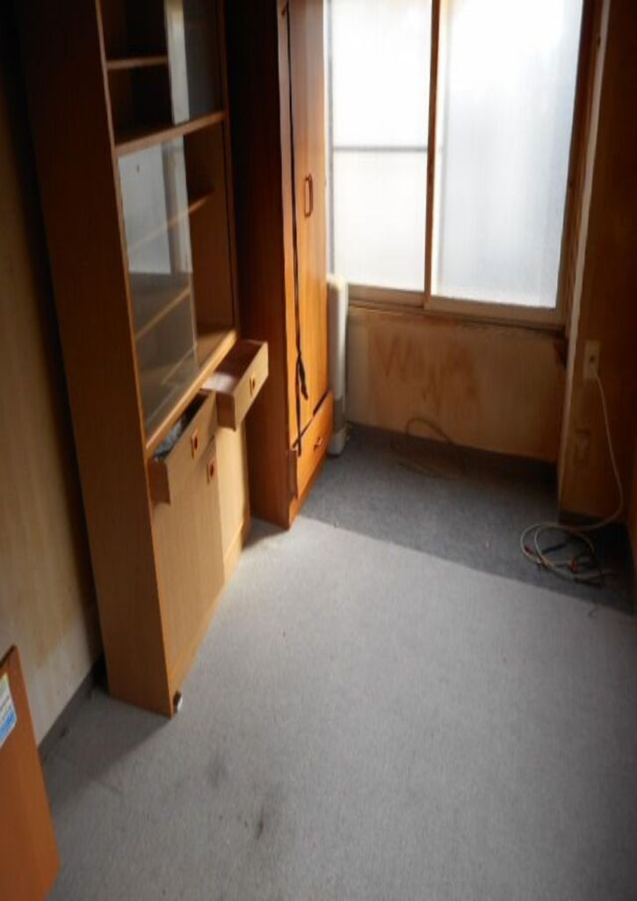
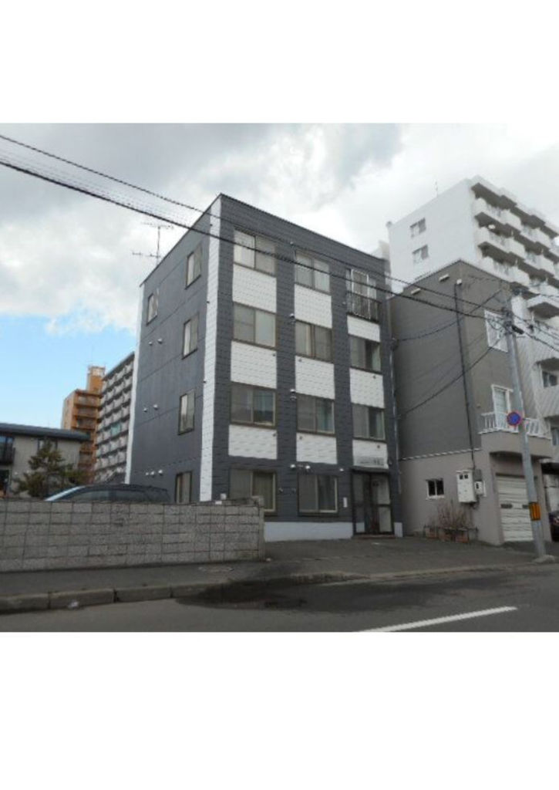
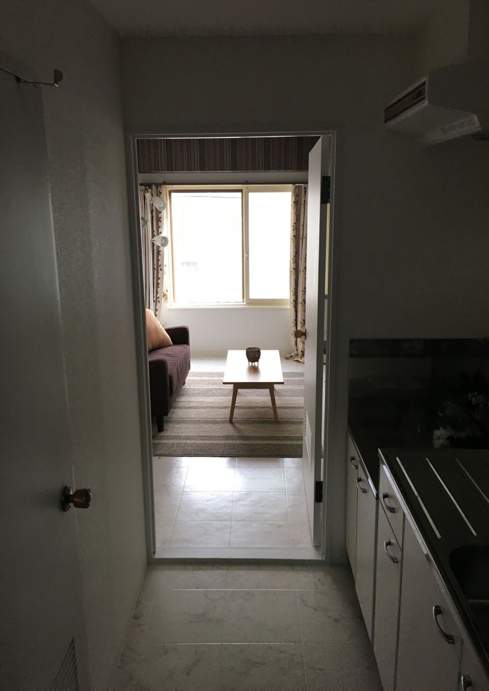
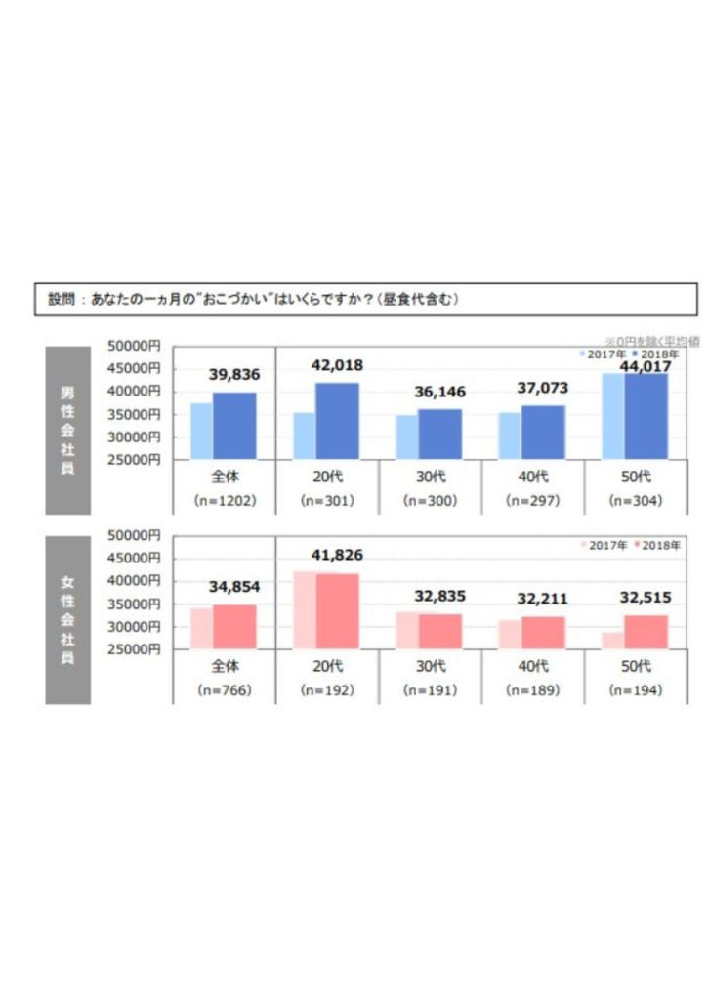
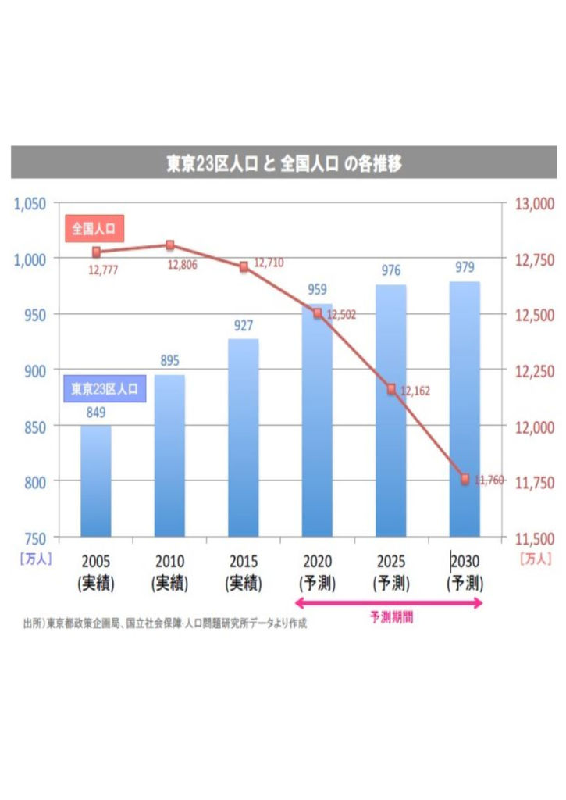
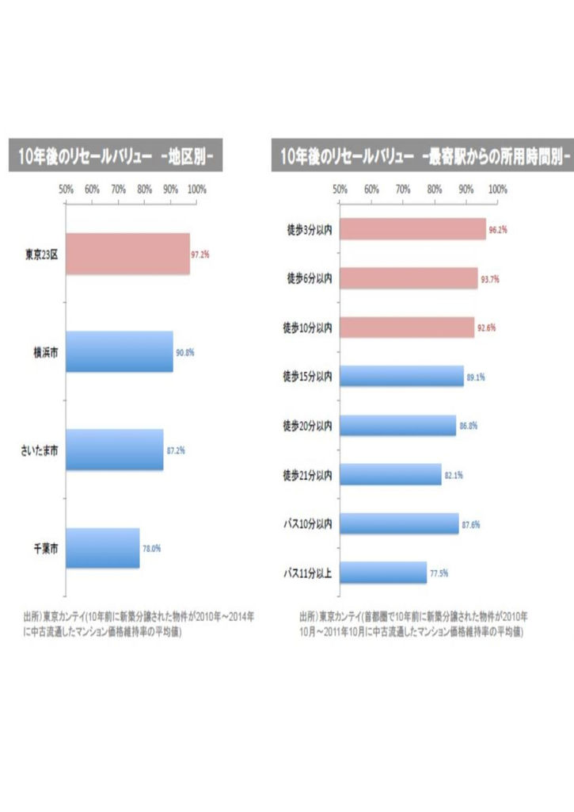
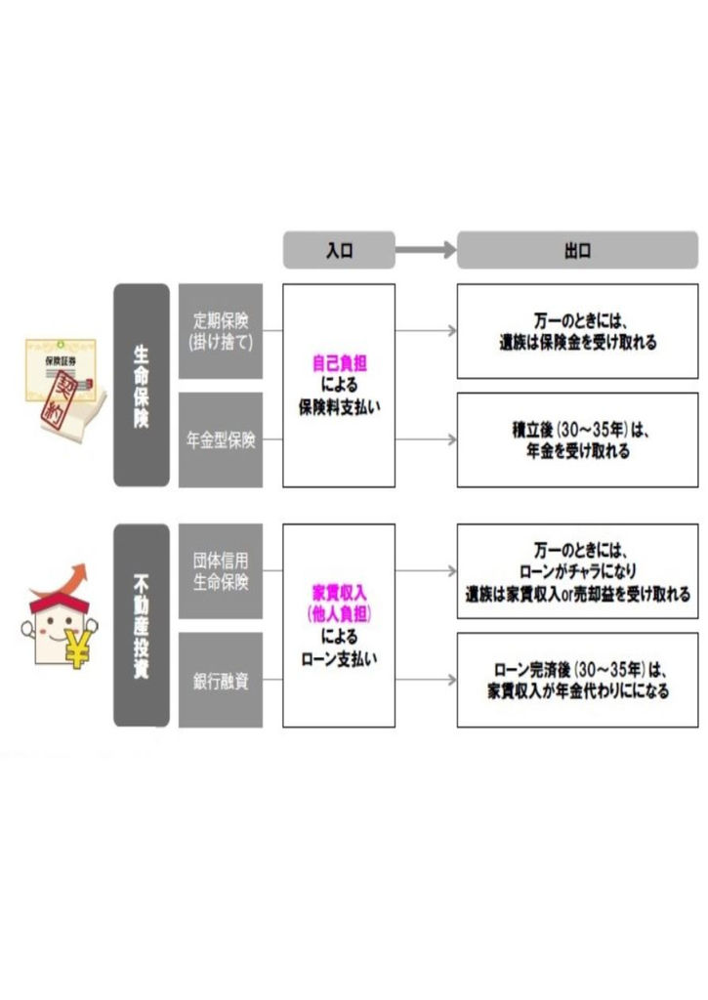
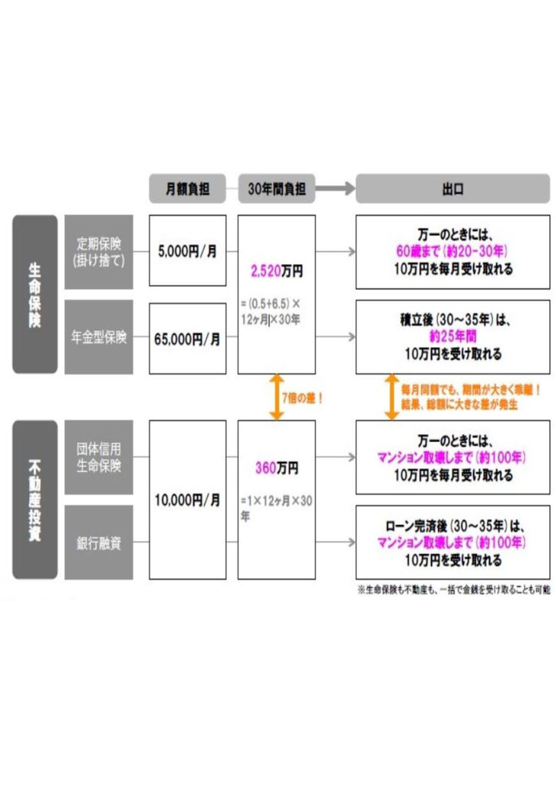

| サラリーマンは貯金するな！ | |
| horishin | |
| (2019) | |
まえがき
不動産投資はあやしい？
「不動産投資」
その言葉を聞くだけで、「あやしい」「騙される」などのイメージを抱く人が増えているようです。そうした背景には、不動産業界で巻き起こっているさまざまな"事件"が挙げられます。
新しい不動産投資ビジネスを手がけるベンチャー企業の破綻、不動産投資業者と地方銀行との癒着、さらには上場企業や大手老舗不動産会社の不祥事など、ここ数年、不動産業界を揺るがす事件が立て続けに起きているのです。その結果、「不動産投資なんてどうせうまくいくわけがない」「失敗するに決まっている」という、マイナスイメージが定着しつつあります。
でも、ちょっと待ってください。本当に不動産投資はあやしく、そして危険なものなのでしょうか。
そもそもあらゆる物事には、良い面と悪い面があります。事実、不動産投資で失敗している人がいる反面、私のように、不動産投資によって人生を大きく好転させている人も存在します。
たとえば、
・月々のおこづかいが増え、贅沢できるようになった
・旅行や食事など、プライベートを謳歌できるようになった
・毎月のように、好きなゴルフを楽しめるようになった
など、不動産投資によって日常の小さな幸せを手に入れた人もいれば、
・希望する部署に異動できた
・やりたい仕事ができる会社に転職できた
・念願だった脱サラを実現した
など、人生そのものを変えてしまった人もいます。
中には、「モテるようになった」「一目置かれるようになった」など、内面的・外見的成長を遂げた人すらいるのです。
あなたも、「人生を変えたい」「お金から自由になりたい」という一心で、本書を手にとったのではありませんか？
そうであるのなら、マスコミに踊らされる一般大衆と同じ視点で物事を考えてはいけません。どんな投資でも、失敗している人もいれば、成功している人もいるのです。そのような原理原則から目をそらし、思考停止に陥らないようにしてください。あなたがやるべきなのは、失敗している人に目を向けるのではなく、成功している人の方法論を学び、実践することです。そしてそのために必要なことは、すべて本書に記しています。
スタートの段階ですべてが決まる
みなさんはじめまして。ｈｏｒｉｓｈｉｎと申します。
本書を手にとったあなたは、非常にラッキーです。なぜなら本書は、他の不動産投資本とは一線を画しているためです。では、他の書籍とはどう違うのか。
それは私が、
・もともとサラリーマン（社畜！）であったこと
・社畜でありながら、不動産投資によって自由な人生を手に入れたこと
ということに加え、
・区分不動産だけでなく、一棟不動産の投資も成功させていること
・都心の物件にも、地方の物件にも投資していること
など、不動産投資に関する幅広い知見を、"実体験を通じて"熟知していることが挙げられます。
その点、不動産投資業者が営業のためのポジショントークで書いている不動産投資本とは異なります。本書はあくまでも、私が自らの経験で得た知識や経験、ノウハウを、中立的な立場で紹介しています。
さらに、
・不動産業者の営業電話から不動産投資をスタートした
・地方にあるボロボロのＲＣマンションを購入した
・某シェアハウスベンチャーの物件も購入していた
など、いわゆる不動産投資の落とし穴と考えられている失敗パターンにもきちんと"引っかかって"います。しかも、落とし穴と言われている手法からスタートしたすべての不動産投資を、ことごとく成功させているのです。
どうして、そのようなことが可能なのでしょうか？
先に結論から申し上げると、不動産投資の成否をわけるのは「物件をどのように管理するか」に尽きます。それですべてが決まるのです。にもかかわらず、管理の難易度が高い一棟にいきなり行って失敗する人が後を絶ちません。一発逆転を狙うのであれば仕方がないのですが。現在、社畜ではあってもお金の面では守られているサラリーマンであればギャンブルに出るのではなく、確実にステップアップすべきです。
社畜であった私が、あらゆる困難を乗り越えて成功できたのは、最初に"あるもの"を購入したからです。
そのあるものとは......。
ズバリ、本書のテーマである「ワンルームマンション」です。
本書では不動産投資のスタートに際してワンルームマンションに特化して解説していきます。その他の不動産投資の方法については、私の別の書籍を参照ください。
ワンルームマンション投資で得られる知識、経験、知見
不動産投資の最初の段階で、ワンルームマンションを購入することができれば、不動産投資に必要なあらゆる知識が身につき、一棟に移行した際の成功の確度がぐっと高まります。
事実、私は最初にワンルームマンションを購入することによって、大きな成功を手にすることができました。ワンルームマンションで経験を積むことなく、「ＣＦ３０万円出る物件が欲しい」「利回りだ」などと言ってもはじまりません。ワンルームマンションをはじめとする区分不動産への投資は、最小の資源で足場を固めるための土台です。とくにサラリーマンの方は、手出し０円でできるため、自らの信用力を活用して最初に着手するべき投資として最適です。
一方、一棟不動産への投資は、不動産投資の経験者がさらに収益を拡大させるための投資です。いきなり素人の投資家が着手するべきものではありません。そのような違いをふまえると、同じ土俵で比較すること自体、いかにナンセンスなことかおわかりいただけることでしょう。
また、ワンルームマンションを購入した後であれば、一棟不動産を購入することは可能です。しかし、一棟不動産を先に購入してしまうと、後からワンルームマンションを購入することはできません。
そのような事実を、あなたは知っていましたか？
そうした実情を知らず、いきなり一棟不動産に投資してしまえば、もはや後戻りすることはできません。知識やノウハウが蓄積されていなければ、難しい一棟不動産を適切に運用することもできないでしょう。私自身、今でこそ複数の一棟不動産を所有しているものの、一棟不動産を購入する前には、５戸のワンルームマンションを購入しています。その過程で得られた知識やノウハウは、一棟不動産の運用にも大きく役立ちました。
たとえば、私が札幌で購入した一棟マンションの事例を紹介しましょう。写真を見ていただくとわかりますが、購入した段階ではいわゆる"ボロ物件"でした。このまま賃貸に出しても、入居者を獲得するのはむずかしいでしょう。

また内装についても、購入した当時はひどい状況でした。クリーニングするだけでは、入居者に選ばれる物件にはなりません。
すでにワンルームマンションへの投資を経験していた私は、外装および内装の重要性を感覚的に理解していたため、管理会社に丸投げせずに、業者に直接依頼してリノベーションすることにしました。また、より選ばれるよう、物件名も変えています。
その結果、この物件は見違えるような変化を遂げました。外装も内装もキレイになり、印象が良くなったおかげで、入居者をスムーズに獲得することができたのです。今では、私が保有する優良物件のひとつになっています。


それもすべて、ワンルームマンションに投資していたおかげです。様々な経験をリスクなくできたからこそです。このようにワンルームマンションへの投資は、きちんと自分に返ってきます。
だからこそ、まずはワンルームマンションを購入すること。リスクなく成功したいなら、そこからはじめるべきなのです。それが、不動産投資を成功させるための成功法則と言えるでしょう。
不動産投資に特別なスキルや才能は必要ない
「そうは言っても、あなただから成功できたのではないですか？」
そのように思う人もいるかもしれません。ただ、あなたの違いはありません。
私も不動産投資をはじめるまでは、どこにでもいる普通のサラリーマンでした。人生全体で考えてみると、むしろ、人より多くの失敗をしているように思います。
ここであらためて、私の経歴を紹介しましょう。
高校時代から、私はほとんど勉強をしていませんでした。試験期間中でも、親に隠れてゲーム三昧。大学受験もうまくいかず、浪人生活を経て、第一志望とは異なる大学に進学しています。正直、大学の授業はつまらないものばかり。その中でも興味があったのは、有名な発明家の方が行っていた特別授業だけでした。そこで知的財産というものに興味をもち、弁理士を目指すようになったのです。
大学院に進学した後、弁理士の試験に挑戦したのですが、結果は不合格。その後、知的財産に関する専門のサービス部門がある民間企業に就職します。そして、社会人２年目にしてようやく、弁理士の試験に合格することができました。ただ、弁理士の資格を取得しても、日々は多忙で土日も仕事に追われるだけ。やがて、精神的にも追い詰められていきました。このままではダメだと思い、何度か転職をしてみたものの、状況が大きく変わることはありませんでした。
「こんなことを定年までずっと続けるのか......。もっと、自分の人生を楽しみたい！」
そのような思いが強まっていたとき、電話営業の不動産業者から紹介されたのが、ワンルームマンション投資でした。
会社には不動産投資の勧誘電話がよくかかってきていたので、正直、不動作投資に良いイメージを持っていませんでした。なので、ちょうど仕事が早く終わったこともあり、軽い気持ちで会ったのを覚えています。
しかし、その営業マンは、何故か不動産の話を全くしませんでした。 何度かお会いする中で、徐々に信頼関係を深めつつ、親交を深めていくタイプだったのです。
そしてあるとき、「ｈｏｒｉｓｈｉｎさん、良い物件が出ましたよ」という連絡を受け、私はその場で購入を決めました。今思えば、営業トークだったような気もしますが笑。
そのとき購入したワンルームマンションが、私にとって最初の不動産投資でした。
それから、私の人生は変わりました。
ワンルームマンション投資によって不動産投資の知識、経験、知見を得ることができた私はその後、一棟不動産にも着手。収益が増えていくにしがたい、念願だった脱サラも実現しました。２０１９年３月時点において、８棟１０６戸＋区分５戸＝計１１１戸の物件を所有。家賃収入は年間８，０００万円ほどになります。所有している資産はトータルで約１０億円です。
具体的な購入の流れとしては、都内の様々な場所にワンルームマンションを複数購入。その後足立区や荒川区で一棟不動産を購入し、札幌、愛知、兵庫など地方一棟物件へと手を伸ばしていきました。最近では板橋区に一棟新築アパートを建設しました。
独立後は、不動産で得た収入をもとに、仮想通貨や民泊、ヘッジファンドなど、幅広い投資も行っています。不動産収入と合わせると年間３６００万円ほどの収入となります。
まさに、不動産投資によって、私の人生は大きく好転したのです。
辛かった社畜の日々を卒業し、今では大好きな仲間と好きなことをしながら、最高の人生を楽しんでいます。
ただし、私がこのようなすばらしい生活を手に入れることができたのは、決してスキルや能力のおかげではありません。あくまでも、サラリーマンの属性を活かして不動産投資に着手したこと。それも、最初にワンルームマンションを購入したのが理由なのです。
そのとき私は確信しました。
「自由と幸せを手に入れるためには、まず、ワンルームマンションを購入すればいいのだ」と。
自由と幸せに満ちた人生を実現するために
私のように不動産投資で成功することは、あなたにも可能です。事実、私と同じような方法で成功している人はたくさんいます。
ただそのためには、最初の一歩が肝心です。それも、正しい一歩が不可欠なのです。その一歩を踏み出すことによって、あなたの人生は大きく変わります。今までと同じことをしていたら、あなたの人生は変わりません。「これをする！」と決めたら、素直に成功者の方法を正しく真似していくことが大事です。
あなたが
･人生を大きく変えたい
･成功したい
･収入を増やしたい
と願うのなら、今すぐ、心に誓ってください。そして行動に移してください。その先には必ず、明るい未来が待っています。
家賃収入だけで生活できるようになると、決まった時間に起きる必要もなく、満員電車に乗る必要もなく、混んでいる土日に遊びにでかける必要もなく、自由に好きな仲間と日々の生活やビジネスを楽しめます。
その点、不動産投資は自由を謳歌するための最適解となり得ます。再現性が高く、特別な才能は全く必要ありません。必要なのは、サラリーマンという「属性」と、人生を変えるための「行動力」だけ。
あなたは、今の生活に満足ですか。一度きりの人生、思いっきり充実させたくありませんか。
そう思うのであれば、正しい一歩を踏み出しましょう。そのためのポイントはただひとつ。本書の内容をよく読み、適切に実践するだけです。もう迷いはありませんね。自由で幸せな人生へようこそ。不動産投資によって、ともに、すばらしい人生を謳歌しましょう。
ｈｏｒｉｓｈｉｎ
序章：「貯金貧乏」な日本人サラリーマン
「貯金貧乏」に苦しむ日本人
いま日本では、「貯金貧乏」に苦しむ人が増えています。
貯金貧乏とは、収入の多くを必要な支出や貯金にまわしているため、日々の生活を切り詰めなければならない人々のこと。テレビ番組の街頭インタビューで、「ボーナスが増えたら何に使いますか？」という質問に対し、
「貯金します」
「ローンの返済にまわします」
などと回答する人は、非常に多いですよね。
それが日本の現状です。
あなたは、一般サラリーマンの１カ月の"おこづかい"が、いくらぐらいかご存知ですか？
２０１８年に新生銀行が行ったアンケート調査によると、男性サラリーマンの平均おこづかい額は、
２０代が４２，０１８円
３０代が３６，１４６円
４０代が３７，０７３円
全体の平均は、３９，８３６円です。
また、女性は男性よりも少ない傾向があり、
２０代が４１，８２６円
３０代が３２，８３５円
４０代が３２，２１１円
全体の平均は、３４，８５４円です。

これらの金額は、あくまでも平均です。
なかには、家のローンや子どもの教育費にお金がかかり、月に１万円しか使えないサラリーマンもたくさんいます。おこづかいが少ないので、部下にお酒をおごることもできず、会社の飲み会に誘われても断り、外食することも一切ない。私のもとを訪れる相談者も、そのような人が少なくありません。
ただし、彼ら彼女らは年収そのものが低いわけではありません。年収が多い人でも、おこづかいは少ない傾向があります。では、なぜ年収が多くてもおこづかいは少ないのでしょうか。それは、家のローンやクルマのローン、あるいは子どもの教育費に大半を支出しているためです。そして、残ったお金も貯金にまわしているので、結果的に、おこづかいが少なくなっているのです。
しかも、クルマのローンもちろん、家のローンも資産にならないという意味では「消費」です。子どもの教育費は「子どもへの投資」でしょうか。
これらの支出を含めて、貯金はできていても、自由に使えるお金はとても少なくなっている。それが、「貯金貧乏」の実態です。
貯金残高が増えても不安は消えない
投資関連の講義や講演などにおいて、私が「貯金貧乏」という言葉を使うと、多くの人は
「将来のために貯金しているのに、"貧乏"だなんて失礼です！」
と反論します。
しかし、よく考えてみてください。ひとたびインフレが起きて、物価が今の２倍になると、あなたの貯金の価値は半分になってしまいます。インフレとは、物価が上昇し、お金（通貨）の価値が下がること。そのためインフレになると、貯金の価値が下がってしまうわけです。
日本人の多くは、お金を使うことを恐れています。それで、お金を貯め込みます。その結果、一生、貧乏な生活から抜け出せません。たしかにお金は、使わなければ減りません。しかし、お金は手放さなければ（投資しなければ）絶対に増えません。
銀行にお金を預けておくと、そのお金は増えますか？０がいくつも並ぶような低金利では、金利でお金を増やすことはできません。ましてや、タンスに入れておくなど論外です。
「日本人は、貯金が最高残高のままで死ぬ。ラテン系の人は、貯金が最低残高で死ぬ」
そのような言葉もありますが、まさに、その通りなのです。
かつて、日経新聞が行った「死ぬ前にやっておきたいこと」というアンケートによると、２０項目の解答のうち、お金にまつわる後悔が１３個もありました。実に、全体の６割以上がお金に関する後悔だったのです。このことからも、日本人の多くは、お金のことで後悔しているのがわかります。将来の不安から抜け出せず、不安を抱えたまま生涯をまっとうする。そのよう人生は、決して幸せとは言えません。
では、どうすればお金に対する不安から逃れることができるのでしょうか？
「ワンマン貯金」で"２つ目の財布"をもとう！
本書で紹介している「ワンルームマンション投資＝ワンマン貯金」を実践すれば、お金の不安を解消し、いまを存分に楽しむことができるようになります。
「ワンマン貯金」とは、都市部をはじめとするワンルームマンションに投資し、将来の資産形成を実現することです。詳しい内容は本文で紹介していますが、苦しみながら貯金している現状を変え、豊かな日常を実現できるスキームとなります。
会社勤めをしていても、自由に使えるお金は毎月たったの３万円。そのような現状を打破し、新しい収入源としての"２つ目の財布"を得られるのが、「ワンマン貯金」の醍醐味です。
収入を増やすという意味で言えば、多くの人は副業にチャレンジしています。たとえば、アフィリエイトやネットオークションなど、自宅でできる副業が注目されています。ただほとんどの人は、儲かっていないのが実情です。アフィリエイトをやっている人の９７％
が、年間収入３万円以下というデータもあるほどです。
また、株やＦＸ、先物取引などの投資に走るサラリーマンもいますが、プロでも儲けることが難しい世界であり、片手間の素人が勝てるはずもありません。事実、９０％
以上の人が大やけどを負い、財産を失っています。
肉体労働のアルバイトをしても、身体に負担がかかるので、会社の本業に差し支えるケースが少なくありません。絵を描く、文章を書く、アクセサリーを作るなどに関しても、特殊な才能がない限り、収入を得るのは困難でしょう。
しかし、本書で紹介している「ワンマン貯金」なら、
１．サラリーマン・ＯＬなら誰でもできる
２．時間がかからない
３．ストレスなくできる
４．才能がいらない
５．失敗しても損害を被ることはない
など、数多くのメリットがあります。とても魅力的な方法だと思いませんか？
しかも「ワンマン貯金」は、知っている人だけが実践できる方法です。この本を手にとったあなたは、すでに、そのチャンスをつかむ入り口にいます。
ただし、ひとつだけ条件があります。
それは、あなたがサラリーマン・ＯＬ、またはその配偶者であるということ。
もしあなたが、「貯金貧乏」を脱し、「ワンマン貯金」によって２つ目の財布を手に入れたいと思のうなら、今すぐ、次のページをめくってみてください。
その先には、すばらしい未来が待っています。
第１章：なぜ日本人は貯金をするのか？
１．あなたは「貯金貧乏」ではありませんか？
「このままでは、老後の資金が足りなくなるのではないか？」
「将来、年金をはじめとする社会保障制度が破綻するのではないか？」
「急な出費が必要になったとき、お金がないと困る......」
私たちの身の回りには、このような不安をあおるニュースや情報があふれています。その中には、いたずらに心配を増幅させるようなものも少なくありません。ただ多くの人は、その裏側にある真実を見ようとするよりも、「なんとかしなければ」という意識が先立ちます。そのため、収入の多くを"将来の備え"に向けてしまいます。その最たるものが貯金です。
なかには、生活を切り詰めて貯金している人も少なくありません。無理に貯金しようとすれば、使えるお金はおのずと少なくなってしまいます。使えるお金が少なくなると、結果的に、日々の生活で節約せざるを得ません。同僚との交流を断ったり、家族での外食を避けたり、贅沢を極端に嫌うようになるわけです。
そのような人は、実に、たくさんいます。
とくに日本人は、もともと貯金を積極的に行う傾向があります。歴史を振り返ると、日本人が貯蓄好きであるのは明らかです。古くは鎌倉時代のころから、財政が厳しくなるたびに「倹約こそ美徳である」という意識が広がっていました。また江戸時代においても、飢饉のような苦しい状況を迎えると、「質素倹約が一番だ」といった空気が広がっていました。さらに、戦時下における「欲しがりません。勝つまでは」という思想は、贅沢をせず、質素に暮らすことの尊さを日本人全体で共有することになりました。
戦後の復興期、そして高度経済成長期を経て経済大国になった日本では、少しだけ、国民が楽観的・消費的になったこともありました。バブル景気のころです。ただ、バブル景気は長く続かず、９０年代初頭にはバブルが崩壊。失われた?年へと向かうことになります。
そのとき国民が思ったのは、「やっぱり贅沢は危険だ」「節約が一番だ」ということではないでしょうか。そして、そうした思いが日本人の根底にあるからこそ、贅沢を嫌い、貯金する人が多いのです。
若い世代の人も、両親や祖父母から、節約の大切さや重要性を嫌というほど教わってきているはずです。そうなると、貯金に対して義務感がわき、貯金に走ることになるのも仕方ありません。
ただ、そのような抑圧された状況は、資産形成や投資への感度を鈍らせるばかりか、金融リテラシーを下げ、将来不安への対処をできなくさせてしまいます。それが、「貯金貧乏」を増やす結果につながってしまっているのです。
２．タンス預金は将来の備えにならない
日本の家計には、実に、膨大な額の金融資産が保管されています。
その額がどのくらいになるのか、あなたは想像できますか？
日本銀行によると、２０１８年９月末時点における「家計の金融資産残高」は１８５９兆円。大変な金額です。
しかもこの数字は年々、増加しています。つまり、ほぼ毎年のように、過去最高を更新しているのです。このうち、全体の５２．１％
を占める９６８兆円が、現金・預金とされています。実に、１０００兆近いお金が現金・預金として保有されているのです。
このことからもわかるように、日本人は着実に、貯金を積み重ねています。いくら政府が「貯蓄から投資へ」というスローガンを掲げても、みんな貯金をやめようとはしません。このままでは、家計の金融資産残高が２０００兆円を、そのうちの現金・預金の残高が１０００兆円を超える日も近いのではないでしょうか。
その中で、とくに注目したいのは現金です。第一生命経済研究所の調査によると、２０１６年末時点において、現金残高は１０２．４兆円。国民１人あたりに換算すると、８１万円になります。また、その中でも、お札として貯め込まれている「タンス預金」は４３．２兆円。それだけのお札がタンス預金として保管されているなんて、ちょっと信じられません。
なぜならタンス預金は、非常に分が悪い貯金だからです。少なくとも、将来の備えになるとは言えません。
では、なぜタンス預金は将来の備えにならないのでしょうか。
その理由は、インフレ時に対応できないからです。インフレになると、物の値段が上がり、お金の価値が下がります。つまり、タンス預金の金額は変わらなくても、その価値がどんどん減っていくということです。たとえば、現在は一杯３００円のコーヒーも、１０年後、インフレによって５００円になるかもしれません。それは結果的に、お金の価値が相対的に目減りしていることを意味しています。
本来、お金というのは使うことに意義があります。３００円で買えるコーヒーを、３００円で買うこと。その等価交換性こそ、お金の強みです。それにも関わらず、お金をいたずらに貯め込んでしまっては意味がありません。お金を使うことへの罪悪感をなくさなければ、これから先も、タンス預金は減らないのではないでしょうか。少なくとも、タンス預金は将来の備えにならないということを、理解しておくべきです。
３．日本人の「心配遺伝子」は世界一短い
貯金が好きな日本人は、ある意味において、生来の"心配性"であると言えるかもしれません。
何が起こるかわからないから、貯金しておく。
将来のために、とりあえずお金を残しておく。
無駄遣いをせず、日々、倹約に努める。
そのような意識が社会に蔓延し、日本人特有の文化や慣習となって根付いている。言うなれば、日本人の多くが心配性になっているわけです。
実はこの心配性、遺伝子の観点からも、その傾向がうかがえます。たとえば、セロトニンの伝達情報が書き込まれた遺伝子に「セロトニントランスポーター」というものがあります。
セロトニントランスポーターには、大きくＬ型とＳ型があります。Ｌ型の特徴は、幸福感を得やすく、度胸もあり、将来の不安よりもやりたいことを楽しめるポジティブ思考であること。そのため、「外向性性格遺伝子」とも呼ばれています。一方でＳ型は、不安や恐怖を感じやすく、慎重に先のことを考えるネガティブ思考です。「内向性性格遺伝子」とも呼ばれています。
世界的にみると、Ｌ型が最も多いのはアフリカで、人種では黒人、白人、そして黄色人種という順番に保有率が少なくなっています。とくにアジア人は、Ｌ型の保有率が低いとされています。日本人の場合、Ｓ型を保有している人は９８％
超。アメリカ人とはほぼ真逆の割合です。
このことからもわかるように、日本人はもともと"心配性遺伝子"を有している民族というわけです。もちろん、それが良い・悪いということではありません。そうではなく、日本人は外国人と比較しても、慎重に物事を判断する傾向があるということです。
それが結果的に、お金を使わず、貯め込むことにつながっています。さらに、文化的な節約の精神が追い打ちをかけ、社会全体として「貯金＝正しいこと」という意識が広がっているのが、日本なのです。そのような状況において、いくら「貯蓄から投資へ」と呼びかけても、なかなか変化は生じません。人々の心に根付いた意識は、そう簡単に変わらないのです。
ただ、ここにきて、闇雲に貯金することの弊害も表れています。少子高齢化にともなう来不安が広がるにつれて、多くの人が、「貯金だけで将来の不安を解消するのは不可能ではないか？」と気づきはじめたのです。
ただ、これまで貯金しかしてこなかった多くの人からすると、何をすればいいのかわからないのが実情です。なかには、慣れない投資に手を出して、資産の大半を失っている人もいます。心配性遺伝子を有している私たちは、これから先、どのような手段を講じていけばいいのでしょうか。その答えを、本書では提示していきます。
４．日本人は最高残高で、ラテン系は最低残高で死んでいく
「金を残して死ぬのは下だ。
事業を残して死ぬのは中だ。
人を残して死ぬのが上だ。」
これは、内務大臣や外務大臣、東京市の市長、さらには拓殖大学学長をも務めた後藤新平の言葉です。お金を残すよりも事業を残し、事業を残すよりも人を残す。後藤新平は、その方が尊いことであると考えていたのでしょう。
ただ残念ながら、日本人の多くは、お金を残す傾向があるようです。将来が見通せず、不安だからとりあえず貯金する。年金や社会保障制度が成り立たないかもしれないから、給料の多くを貯金にまわす。そして、貯金を残したまま死んでいく。そのような人が、実にたくさんいるのです。
不安を解消させるためにお金を貯めていると、そのほとんどは使われません。なぜなら、いくらお金を貯めても不安は消えないからです。しかも不安の多くは、目に見えないものです。目に見えないものを恐れている状態では、解消しようがないのです。それでまた、せっせと貯金にはげむ。その結果、死の淵にたった状態で、貯金額が最高残高になっているというわけです。
一方で、ラテン系の人は、死ぬときにほとんど貯金を残していません。積極的にお金を使っているため、残高がほぼない状態で最後を迎えます。
お金を使わずに、最高残高で死んでいく。
お金を使い、最低残高で死んでいく。
あなたは、どちらがより幸せな人生だと思いますか？
少なくとも後藤新平なら、後者を選ぶのではないでしょうか。お金よりも、事業よりも、人を残したいと考えていたのですから。人生を謳歌するという意味においても、この決断は重要です。お金を積極的に使わなければ、新しい経験や体験を通じて、日々を楽しむことはできません。厳しい節約生活では、我慢しなければならないためです。
他方、必要なことにお金を使い、新しい経験や体験によって人生を充実させ、生きる喜びを得られること。それは、節約とは真逆の生活です。大切なのは、あなた自身が、どちらの人生を選ぶのかということです。
将来の漠然とした不安のために、貯金するのか。
それとも、お金を使って人生を充実させるのか。
もし、前者ではなく後者を選びたいというのなら、まずは、闇雲に貯金するのをやめなければなりません。そして、お金を残すのではなく、"正しい方法で適切に使っていく"という方針に切り替えるのです。すべては、そこからはじまります。
５．「お金が減るから投資はしたくない」という真実
「お金が減るから投資はしたくない」
私のもとを訪れる人の中には、そのような意見をもっている人も少なくありません。そのことが、貯金への偏重を生み出している向きもあります。そのような人にとっての投資とは、株式投資やＦＸ、さらには仮想通貨などを指しているのでしょう。
ただそれらの投資は、多分にギャンブル的な要素を含んでいます。株式投資にしても、すべての銘柄を完璧に読み切ることはできません。社会情勢や環境の変化など、予期せぬ出来事が起こる可能性は少なからずあります。
ＦＸなどはまさに、ギャンブル的な要素が強く、基本的には「上がるか・下がるか」の世界です。一般の人が、資産運用に使う手法としては適していません。かといって、目新しい投資手法に手を出すのも考えものでしょう。仮想通貨の代表であるビットコインも、バブルがはじけ、今では最高額の４分の１ほどの価値となっています。
このような投資手法を検討した結果、「お金が減るから投資はしたくない」と考えるのも無理はありません。
そもそも貯金が好きな日本人には、リスクが高い投資商品は向いていません。一般預金や定期預金のような元本保証との乖離が大きいためです。よくある投資詐欺でも、「元本保証だから安心です」という言葉が使われています。日本人は、この言葉に馴染みが深いためです。
その点、株式投資やＦＸ、仮想通貨など、元本保証が前提となっていない投資に着手しても、リスクを許容できず、うまくいかないのです。
ただし、お金というものは、使ってこそ意味があるものです。お金のままでは、何ら価値を生みません。お金を使えば、食べ物や飲み物、生活必需品など、あらゆるものが購入できます。さらには、家族との旅行や貴重な体験など、かけがいえない時間を過ごすこともできます。それはまさに、価値の交換です。
そのことからもわかるように、お金というものは、価値の交換を行う手段なのです。
もちろん、物々交換を行ってもいいのですが、それでは膨大な時間と労力がかかってしまう。そこで、お金という概念が生み出され、現在も使われているのが実情です。そのようにシンプルに思考すると、お金が減るということは、決して悪いことではないとわかります。むしろ、新たな価値を手に入れるという意味で、いいことなのです。
しかし、株式投資やＦＸなどで資産が消えてしまったり、無駄な消費をしてお金がなくなったりすると、「やっぱり使わないほうが良かった」となってしまいます。だからこそ、大切なのは、正しいものにお金を使えるようになること。そして、そのための尺度を自分でもっておくことです。
お金の本質を理解していれば、無闇にお金が減ることを恐れないようになります。お金を適切に使えるようになれば、お金はむしろ増えていきます。
預金残高を眺めてニヤニヤしていても、意味はありません。そこから脱することが、将来の資産形成につながります。
６．日本人の９割は「お金の勉強」をしていない
お金とはなにか？
お金の役割とは？
そもそも、お金は何のためにあるのか？
あなたは、こうした問いにすぐ答えられるでしょうか。多くの人は、答えられないかと思います。
無理もありません。とくに日本人の大半は、お金に関する勉強をしないまま、大人になっているためです。そして社会に出てからも、お金の勉強をすることはありません。また、周囲の人とお金の話をする機会も限られています。
人前でお金の話をしようものなら、
嫌らしい。
気分が悪い。
マナーがなっていない。
などの眼差しを浴びることになります。初対面であればなおさらです。
また家庭内においても、お金の話は積極的にされません。その点、諸外国とは大きく異なります。たとえばアメリカでは、日常的に、お金の話をしています。それは、家庭内でも同様です。
また、子どものおこづかいが報酬制である家庭は、めずらしくありません。具体的には、掃除をしたら何ドル、食器を洗ったら何ドル、ベッドメイキングをしたら何ドル、というスタイルです。
そのような経験を経て、子どもはお金を生むために労働が必要なことを知り、そこで稼いだお金を使うこと、貯めることを学んでいきます。さらに、早い段階から投資について学ぶ子どもも少なくありません。労働だけではお金が増えていかないことを知り、投資について勉強しようとするのです。
一方で、日本の子どもは、働かなくてもおこづかいがもらえます。月々のおこづかいはもちろん、正月になると、大人たちが「お年玉」という名のおこづかいをたくさんくれます。それでは、お金がどのように生み出されるのかを知ることはできません。日本の子どもは、お金に関して甘やかされているのです。
その結果、大学の学費だけでなく、生活費や交際費まで親に負担してもらっている人もいる。そのような人が社会に出ても、金融リテラシーは低いままです。日常でお金に関する知識や経験が得られないのであれば、金融リテラシーが高まるはずもありません。
お金に関する知識が少なければ、お金の不安に対処できなくても仕方ないでしょう。ただ、お金の問題は死活問題になります。とくに、将来不安という点で言えばなおさらです。ただ「お金の勉強をしていないのだから、『貯金貧乏』になっても仕方ない」と言われて、納得できる人はいないでしょう。
危機感をもっている人ほど、すでに学びはじめようとしています。今のあなたのように。
７．高齢者の６人に１人、独居老人の２人に１人が老後破綻している
あなたは、「老後破綻」という言葉をご存知でしょうか？
老後破綻とは、定年退職後の生活に必要なお金が工面できず、文字通り、老後に破綻してしまう現象のことです。厚生労働省の調査によると、平成３０年１１月時点において、生活保護を受けている高齢者世帯は約８８万世帯。前年同月比より１．９％
増加しています。
しかもこの数字は年々、増えているのです。年齢階級別保護率の年次推移で見てみても、６５歳以上の保護率は右肩上がりで上昇しており、ここ２０年で１．５５から２．８９まで増加しているのがわかります。
そのなかには、貯金をしていたのにも関わらず、破綻している人も存在しています。
「貯金をしていたのになぜ？」と思う人もいるかもしれません。しかし、闇雲に貯金していても、老後の生活を維持することはできません。
そもそも、破綻してしまう理由は、収入（貯蓄）と支出のバランスが合っていないためです。収入（貯蓄）よりも支出が多ければ、いつかは破綻してしまいます。そして、老後にもらえる年金はすでに、支給年齢が高まっていたり、金額が減少したりしています。
その結果、収入と支出のバランスが合わなくなるのも無理はありません。「こんなはずじゃなかったのに......」と言っても、あとのまつりなのです。
とくに、収入が多く、生活水準が高い人ほど注意が必要です。なぜなら、収入が少ない状態になっても、生活水準を落とすのはむずかしいためです。収入が少なくなったり、貯金が不足したりしている状態であるにも関わらず、支出していたらどうなるでしょうか。当然、いずれは破綻します。
このことは、いわゆる「パーキンソンの法則」でも言われていることです。
パーキンソンの法則では、「支出の額は、収入の額まで膨張する」と定義されています。つまり、収入が増えれば増えるほど、それに合わせて支出も増えるということです。そう考えると、収入が多い人は、必然的に支出も増えることになるわけです。そして、収入が少なくなっても、コントロールが不能になってしまう。
その結果、破綻に至ります。老後破綻が増えている背景には、そのような事情があるのです。
８．２０００人のマネーコンサルをしてわかったこと
私はこれまで、のべ２０００人以上のマネーコンサルティングをしてきました。
その中でわかったのは、多くの人が、さまざまなタイプのお金の悩みを抱えていること。そしてその悩みに対して、明確な解決策をもっていないことです。ただ、誤解しないでください。私のもとを訪れる相談者は、とても優秀で、まじめな人ばかりです。その証拠に、彼ら彼女らは将来のことをきちんと考えており、貯金していたり、保険に加入したりしています。
しかし、残念ながらそれらの方法では、将来不安に対処することはできません。事実、老後破綻まではいかなくとも、６５歳を過ぎても働かなければならないケースも少なくないのです。
何も考えず、両親や周囲の人に言われるままに貯金をしていたのにも関わらず、望むような老後をおくれない。それは、あまりにも悲しい現実です。
そうなることがわかっていたら、誰も貯金などしないでしょう。貯金するよりも、家族との時間や自分の時間を充実させた方がよかったと考えるはずです。たとえば、学生時代を思い出してみてください。アルバイトなどをして稼いだお金は、好きなように使っていたのではないでしょうか。
将来のお金のことなど考えず、自分で稼いだお金を自分の好きなことに使える生活。それは、素晴らしいことです。しかし、社会人になり、結婚したり子どもができたりすると、途端にお金から不自由になってしまう。将来のことを考えて節約せざるを得なくなるわけです。
もし戻れるなら、学生時代のように、好きなことにお金を使いたい。そう思っている人も多いのではないでしょうか。実は、そうした願望を叶えるために何が必要なのかを考えることが、同時に、将来不安に対処するためのきっかけとなります。
なぜならお金というのは、ネガティブな動機ではただたんに守るという発想にしかならないためです。
お金を守るための貯金では、将来不安に対処できないことはすでに述べました。
では、どうすればいいのか。
ポジティブな視点、つまり「好きなようにお金を使える状態をつくる」という発想からスタートし、その状態になるために必要な方策を考えるのです。実は、お金を守るのではなく、お金を使うという発想になれば、資産を増やすことは可能です。その理由は単純で、
お金は使えばなくなる（使わなければなくならない）。
お金は使わなければ増えない。
という、絶対的な法則があるためです。
お金をタンスに入れておいても、何も変わりません。世の中のお金持ちを見てみればわかるように、お金を増やすためにはお金を使うべきなのです。では、何にお金を使えばいいのでしょうか。次章以降で見ていきましょう。
第２章：サラリーマンでもＯＬでも「２つ目の財布」が持てる
１．サラリーマンやＯＬがもつ最大の武器とは？
サラリーマンやＯＬにとって、最大の武器は何だと思いますか？
一定の収入。
雇用の安定性。
充実した福利厚生。
たしかにそれらは、会社勤めをしている人が得られる恩恵です。
規模は異なるものの、会社勤めをしている人や公務員の人は、「収入」「雇用」「福利厚生」などの面から、自営業者や経営者、フリーランスなどより優遇されています。
ただ、こと資産形成という観点から言うと、最大の武器は別にあります。
その武器とはズバリ、「信用力」です。
ここで言う信用力とは、「金融機関から融資を受けることができるか」「受けられるなら、どのくらいの金額まで融資してもらえるか」という視点での評価です。とくに、"住宅購入に必要な信用力"は、サラリーマンやＯＬなど、会社勤めをしている人は有利であると考えていいでしょう。
その理由は簡単で、サラリーマンなら収入が安定しており、ローンの返済に必要な原資を得られやすいためです。
自分が誰かにお金を貸すときのことを考えてみてください。収入がない人にお金を貸すと、「本当に返済できるかな？」と心配になるはずです。一方で、大手企業に勤めている人や公務員が相手なら、「いざとなれば給料を押さえればいいだろう」と考え、安心してお金を貸せるはずです。
金融機関からの評価も、こうした発想と似ています。
つまり、「勤め先」「勤務年数」「業種」「企業規模」などをベースに、「このぐらいの金額なら問題なく返済できるだろう」と考え、融資可能額を算定しているのです。
ちなみに、住宅ローンを借りる際のチェック項目としては、その他に、次のようなものがあります。
・年齢、家族構成
・貯蓄状況、借り入れ状況（信用情報）、資金計画
・融資対象となる不動産の価値
年齢や家族構成、貯蓄状況、さらには現在の借り入れ状況や資金計画を見れば、その人がきちんと返済できるかどうかが見えてきます。そこで各金融機関では、このようなチェック項目を確認し、融資できる金額を算定しているというわけです。
とくに大手企業の社員や公務員は、組織の評価が高く、安定性があると判断されるため、融資可能性も広がります。大手企業や国の機関であれば、すぐに倒産したり、破綻したりしませんよね。それが安定性の根拠です。本書で紹介している資産形成手法では、この信用力を活用したものとなります。そのため条件として、サラリーマン・ＯＬの方が対象になると述べているのです。
２．信用力を活用すれば数千万円規模の住宅も買える
ほとんどの人は、住宅を購入するときに「住宅ローン」を組んでいます。
住宅ローンを組むときに活用しているのは、サラリーマン・ＯＬの最大の武器である信用力であると述べました。
ここであらためて、住宅ローンの概要について確認しておきましょう。もともと住宅ローンは、住宅を購入するために、金融機関から融資を受けることです。つまり、住宅購入に必要なお金を借りるわけですね。もちろん、住宅の購入資金をコツコツ貯めてもいいのですが、それこそ数千万円の住宅を購入するとなると、貯めるのに何十年もかかってしまいます。
本来、マイホームを購入する目的は、結婚や子育てなど、日々の暮らしを支える拠点を得るためです。そのため、若いうちから検討しはじめる人が多いのです。そして、まだ貯金が貯まっていない若いうちに購入すべく、住宅ローンという仕組みを利用することになるわけです。
現状、住宅ローンという仕組みを利用すると、年収の７〜１０倍程度の融資を受けることが可能です。たとえば年収５００万円の人であれば、３５００〜５０００万円の融資を受けられることとなります。
住宅金融支援機構が提供している「フラット３５」のホームページでは、年収と融資金利、返済期間などを入力することで、おおよその融資金額を知ることができます。試しに年収５００万円、融資金利１．２％
、返済期間３５年で元利均等返済を選択すると、借入可能額（概算）は４９９９万円となりました。
このように、およそ年収の１０倍まで借り入れが可能であるとわかります。
では、なぜ年収の１０倍近くもの借金ができるのでしょうか。
その理由は、不動産という担保があること、そしてサラリーマン・ＯＬならではの信用力があるためです。こうした仕組みを上手に活用すると、住まいとしての住宅購入だけではなく、投資用の不動産を購入するための資金をも捻出できることがわかります。
投資用の不動産とは、融資を受けて物件を購入し、それを賃貸に出すことによって収益を得られる不動産のことです。このようなスキームを、一般的に「不動産投資」と言います。
もっとも、住宅ローンと不動産投資用のアパートローンはそもそも別物です。ここでは、大まかな仕組みとしては類似しているという点を押さえておきましょう。
不動産投資は、不動産という資産を所有できることに加え、安定的に運用できる投資手法でもあるため、古くから活用されています。アメリカ合衆国の第４５代大統領であるドナルド・トランプ氏が「世界の不動産王」と呼ばれているように、不動産投資で膨大な財を成したことは有名です。
サラリーマンやＯＬの方は、すでに、この不動産投資に着手するチャンスを有しているのです。
３．夫が低収入でもローンは組める
かつて、不動産投資に必要な融資を受けられるのは、収入の安定性がとくに高い公務員ぐらいでした。それが近年、金融機関の方針が変わり、大手企業の社員はもちろん、中小企業の社員にまで間口が広がってきています。最近では、夫婦の収入を合わせて融資を受けているケースや、契約社員の方、さらには自営業者でもローンを組めている事例があります。
たとえば、ご主人の年収が３００万円であった場合。不動産投資の基準は年収３５０万円からになるため、融資を受けるのは厳しいと考えられます。
ただ、共働きで奥さんの年収が５０万円であった場合。世帯年収としては３５０万円になるため、融資を受けられる可能性があるのです。少なくとも、世帯年収で３５０万円を超えていれば、不動産投資に必要な融資を受けられる可能性があると考えていいでしょう。
ちなみに、この場合の年収とは、手取りではなく「額面」です。たとえば額面金額が３５０万円の場合、手取りはもっと少なくなりますが、気にする必要はありません。額面金額が３５０万円あれば、不動産投資はできると覚えておきましょう。
同様に、金融機関から収入の安定性が乏しいと判断されがちな自営業者や契約社員などについても、年収３５０万円はひとつの基準となります。自分で金融機関に交渉してもうまくいかないかもしれませんが、専門家に依頼することで、チャンスをつかめる可能性は十分にあります。
もちろん、住宅ローンと同様に、投資する物件の審査があることも忘れてはなりません。とくに不動産投資の場合、物件の審査は重要です。
なぜなら不動産投資では、投資した不動産から得た収益（家賃収入）をもとに、ローンを返済していくからです。
住宅ローンとの違いで考えてみましょう。
住宅ローンでは、購入する住宅を担保にし、信用力によって金融機関から融資を受けます。ローン契約者は働きながら、少しずつ、返済していくわけです。一方で不動産投資では、投資用の物件を購入し、その物件を担保にしつつ、信用力によって金融機関から融資を受けます。このときの返済原資は、主に物件の家賃です。
このように、住宅ローンと不動産投資とでは、金融機関から融資を受けるという点では同じでも、その目的や返済の原資が異なります。特筆すべきなのは、住宅ローンがローン契約者の稼ぎで返済していくのに対し、不動産投資は購入した物件の稼ぎ（家賃収入）で返済していくという点です。
これらの違いが、将来の資産形成に大きな差をもたらします。
４．「２つ目の財布が」あれば生活はもっと豊かになる
想像してみてください。
もし、今の仕事以外に、安定的な収入源があったとしたら。どれほど生活が豊かになるでしょうか。
たとえば、月々１万円の別収入があれば、１万円分の贅沢ができます。２万円であれば２万円分、３万円あれば３万円分、余計に使えるのです。
１万円あれば、家族で外食をすることができます。
２万円あれば、国内旅行に行くことができます。
３万円あれば、海外旅行に行くのも夢ではありません。
このように、仕事以外の収入源を得るということは、日々の暮らしを豊かにするきっかけとなります。
そのような観点から、最近では、副業をしている人が増えています。とくに近年、「働き方改革」の名のもとに、残業時間の削減が呼びかけられています。各社ともに、残業は減らしていかざるを得ません。残業時間が減るということは、時間が余ることに加えて、給料も減っているということです。その分、別の仕事をしなければなりません。そうした点も含めて、副業をしている人が増える傾向にあるわけです。
ただ、残業代が減った分を副業で補填しているだけでは、これまでと変わりません。むしろ、新しい仕事をしなければならないので、余分に時間と体力を削ることになるでしょう。
それでは、何のための「働き方改革」なのかわかりません。個人の幸せという観点からも、本末転倒と言えるでしょう。その点、不動産投資に着手すれば、冒頭で述べたような"安定的な収入源"を確保することが可能となります。
すでに述べているように、不動産投資の源泉は家賃収入です。家賃収入とは、保有している入居者を賃貸に出し、その入居者から得られるお金のことですね。しかも家賃というのは、毎月、安定的に得られるお金です。賃貸管理を外注していれば、まったく働くことなく得られるお金、つまり不労所得です。
実は、この不労所得を得られるかどうかが、将来の資産形成を左右することになるのです。
多くの人は、自分が働くことでお金を得ています。要するに、労働対価としての賃金を得て生活しています。ただ、人間が働ける時間や量には限りがあります。食事や睡眠の時間も確保しなければなりませんし、家族との時間も大切です。
そうなると、副業という形で収入源を増やすことは、得策ではないとわかります。そうではなく、資産形成という観点からは、あくまでも不労所得を目指すことが求められるのです。
５．お金を使ってもお金が増えていく仕組みづくり
お金を使えばお金が減る。
そのような大原則がある中で、どうすれば、もっとお金を自由に使えるようになるのでしょうか。
答えは簡単です。
稼いだお金をそのまま使うのではなく、あらかじめお金が増えていく仕組みをつくったうえで、使うようにすればいいのです。
「そんな仕組みがあるわけない」
そう思う人もいるでしょう。しかし、実際には、お金を使ってお金を増やせる仕組みを構築している人はたくさんいます。たとえば、たくさんの不動産を購入して、それらを賃貸に出し、家賃収入を得て暮らしている人。つまり、不動産投資家です。
彼らはあらかじめ、お金が増えていく仕組みをつくっています。平日の９時から１７時まで働くのではなく、不動産を所有して賃貸する仕組みをもっているため、お金はどんどん増えていきます。
賃貸住宅に住んだことがある方ならご存知のように、毎月、きちんと家賃を払いますよね。その家賃をもらう立場の人は、安定的な収入を確保していることになります。
それが、不動産投資家（不動産オーナー）です。
しかもその仕組みとしては、物件管理などを専門の業者に委託することによって、ほぼ完全な自動化を実現しています。要するに、ただ物件を保有してさえいれば（売却しなければ）、毎月のように、収入が積み重なっていくというわけです。
もちろん、物件を購入するためのローン返済や管理費、その他諸経費なども捻出しなければなりません。ただ、そのための費用に関しては、入居者から得られる家賃をあてることで、持ち出しはなくなります。
たとえばローン返済が月々５万円だった場合、家賃が６万円であれば、ローン返済額（元本と金利）に管理費等を加えても、ほぼまかなえてしまいます。
つまり、不動産投資家が負担するお金は、ないということです。そして、毎月のように、ローン返済額がコツコツと積み重なっていくことで、少しずつ、残金は少なくなっていきます。それはまるで、大きな貯金箱にお金を入れていき、貯金箱がすべて貯まったら、最終的にはその貯金箱が自分のものになるようなイメージです。
しかも、貯金箱に入れるお金は、入居者が用意してくれます。これが不動産投資の醍醐味である、「２つ目の財布」の正体です。
２つ目の財布があれば、お金を使ってもお金が増えていきます。そのような仕組みをつくれれば、「お金を使えばお金が減る」という原則に、あらがうことができるようになります。
６．時間とお金、どちらを重視するべきか？
１日は、誰にとっても２４時間です。そして１年は、どんな人であっても３６５日です。
すべての時間は平等であり、どうやっても、物理的に増やすことはできません。その点、お金に余裕がある人ほど、自らの時間を有効活用することにお金を支出しているものです。
たとえば、
・移動時間を短縮するために、タクシーなどを活用する
・他人ができることは、お金を払って他人に依頼する
・自分の時間を厳守し、相手にもそうした姿勢を求める
などの傾向があります。
また、「お金持ちは、お金を払って時間を買う。貧乏人は、時間を売ってお金を稼ぐ」という言葉もあります。それはつまり、お金と時間のどちらを大事にしているのか、ということでしょう。
お金を優先してしまうと、時間を犠牲にすることになりかねません。しかし、時間は有限であることに気づいていません。
一方で、時間を優先する人は、時間を生むためにお金を使います。その結果、使える時間が増えていくのです。両者の決定的な違いは、資源の有限性を認識しているかどうかにあります。
お金というのは、たしかに私たちの生活にとって欠かせないものです。しかし、たとえ失ったとしても、取り戻すことは可能です。他方、時間というものは、ひとたび失ってしまったら取り戻すことはできません。いくらお金を払っても、消えてしまった時間は戻らないのです。
この違いを理解しているかどうかが、将来の資産形成にも大きな差をもたらします。
たとえば、ここに１００万円あったとしましょう。あなたは、その１００万円をどうするでしょうか？堅実な日本人の多くは、「貯金する」と答えるかもしれません。しかし、貯金をしてもお金は増えません。いたずらに時間が過ぎていくだけです。
しかし、投資して毎年３％
のリターンを得たらどうでしょうか。複利効果もあり、お金は時間の経過にともなって少しずつ、しかし確実に増えていきます。
その決断ができるかどうか。それはまさに、時間を重視しているか、お金を重視しているかの違いによるものなのです。
「お金があれば投資しているよ」
そう思う人もいるでしょう。果たして、本当にそうなのでしょうか。
サラリーマンやＯＬの人は、すでに、信用力という資産をもっています。その信用力は、数千万円規模のお金と同等の価値を有しています。しかし、その信用力を適切に活用できている人は、不動産投資を行っているごくわずかな人だけなのです。
７．誰にとっても投資が不可欠な時代へ
日本人の中には、投資を"悪いもの"だと思っている人、あるいは毛嫌いしている人が少なくありません。その理由としては、すでに述べてきたように、日常的に投資について話す機会がなく、また学ぶこともないためです。そうした背景があるため、これまで投資の重要性やその必要性がないがしろにされてきました。
ニュースなどで投資に成功した人のケースを見ても、「お金がある人はいいよね」と思うことしかできない。あるいは、投資に失敗した人の情報にふれると、「やっぱり堅実が一番だ」などと考えてしまう。自分事として認識できていないために、そのような感想を抱いている人も多いのではないでしょうか。
しかし、これからはそうはいきません。年金や社会保障制度の不安定さにともなう老後不安は、すべての日本人にとって共通の課題です。自分の将来は、自分で守るしかありません。事実、働き盛りの８割以上は、老後の生活資金に不安を感じています。２０代、３０代、そして４０代と、年齢を経るごとに顕著になっているのが実情です。
とくに年金は、これまで給付に対して保険料が余っている状態だったものの、将来は給付に対して保険料だけでは足りなくなることが見込まれています。
その足りない部分については、「年金積立金管理運用独立行政法人（ＧＰＩＦ）」の運用益で補填することになるでしょう。
ただ実際は、厳しい状況が続いています。
たとえば、２００８年に起きたリーマンショックにより、平成２０年度の収益額は９兆円を超えるマイナスとなってしまいました。
ＧＰＩＦの運用益が期待できないとしたら、私たちが将来もらえる年金は、大幅な減額にならざるを得ません。
生産年齢人口が減り、高齢者数が増えることもあり、年金負担額はそのままでも、受給額は大きく減少するかもしれません。
こうした現状をふまえると、これからは、誰にとっても投資が不可欠と言えそうです。ただその投資も、確かな目できちんと投資先を選ばなければ、失敗してしまうだけでしょう。
たとえば、
・金融機関から勧められるままに、株式投資や投資信託をしている人
・よく考えず、仮想通貨やＦＸに手を出している人
・友人や知人のまねをして、新しい投資先を探している人
このような人たちは、いずれ痛い目を見ることになるでしょう。堅実な方法を選択せず、またきちんと腹落ちしてから投資に着手しなければ、成功することはできません。
誰にとっても投資が必要な時代だからこそ、自分のやるべき投資を見極めることが大切なのです。
第３章：誰も教えてくれなかった「ワンマン貯金」とは？
１．ワンルームマンション投資が優れている理由
数多くのリスキーな投資手法がある中において、本書で紹介している不動産投資、とくに「ワンルームマンション投資」は、日本人向きであり、かつ安心・安定の投資手法です。
そもそも不動産投資とは、金融機関から融資を受けて物件を購入し、その物件を賃貸に出すことによって家賃収入を得る投資手法であると述べました。そのうちワンルームマンション投資とは、ワンルームマンションを１戸単位で投資していく手法のことです。
ワンルームマンション投資が優れている点としては、
・元手が少なくてもはじめられること
・安定した収入と利回りが見込めること
・将来の備えとして最適なこと
などが挙げられます。
サラリーマンやＯＬは、すでに信用力という資産を有しています。その信用力を活用すれば、とくに投資用不動産の場合、年収の１０倍程度まで融資を受けることが可能です。
たとえば、年収５００万円のサラリーマンの場合。購入する物件にもよりますが、２５００万円のワンルームマンションを２戸、計５０００万円まで融資を受けることができます。年収６００万円の方であれば、トータル６０００万円。年収７００万円の方であれば、トータル７０００万円がひとつの目安となるでしょう。
また、ワンルームマンション投資に関わらず、不動産投資というのは、半世紀以上前から、むしろ江戸時代からすでにスキームが確立されている投資手法となります。そのため、金融機関も積極的に融資しているのです。
その結果、サラリーマンやＯＬの方であれば、元手が少なくてもはじめることが可能というわけです。安定した収入と利回りが実現できるのも、ワンルームマンション投資の特徴でしょう。
ここで言う"利回り"とは、「年間家賃収入」の「物件価格（投資額）」に対する割合のこと。つまり、「投資した金額がどのくらいの割合（％
）で運用できるのか」を示す指標のことです。
とくに不動産投資業界では、「表面利回り」と「実質利回り」という言葉が使われています。それぞれの違いは次の通りです。
・表面利回り：投資額に対する、経費を考慮しない「売上」の割合
・実質利回り：投資額に対する、経費を考慮した「利益」の割合。
さらに、ワンルームマンションに投資しておけば、将来の備えとしても最適です。ローン返済が終わったら、不労所得として活用し続けられるためです。とくに、都心の利便性が高いワンルームマンションは、需要が豊富で価値が落ちにくく、投資対象として非常に優れています。
２．９７％ のサラリーマンが知らない「ワンマン貯金」とは？
書店に行くと、数多くの不動産投資関連本を目にすることができます。それだけ、不動産投資は人気があるということです。ただ、不動産投資をやろうとしている人の大半は、最初から大きな利益を得ようとして失敗しています。
たとえば、いきなりアパートや１棟マンションに投資している人の多くは、空室が出て収支のバランスがマイナスになってしまったり、あるいは管理の不備から生じるトラブル処理に追われたりしています。
その結果、物件の価値が下がったり、ローン返済ができなくなったりしているのです。赤字を覚悟して、不動産を手放している人も少なくありません。やはり、素人がいきなりアパートや１棟マンションに手を出すのは危険なのです。
また、シェアハウスへの投資や、サブリース主体の物件投資なども、同様に素人にはオススメできません。存知の方も多いかと思いますが、女性向けシェアハウスに投資した結果、投資した資金が回収できず、苦しんでいる投資家はたくさんいます。あるいは、サブリース契約をベースとして大手不動産会社に投資した人も、物件の不備が相次ぐなど、入居者の獲得に苦労している状況です。
ちなみにサブリースとは、簡単に言えば「転貸」のことです。不動産投資家（オーナー）のが所有する物件を、そのまま入居者に賃貸するのではなく、別の業者に賃貸したうえで転貸する仕組みとなります。
不動産投資家としては、業者から一定の家賃が保証される分、一方的な減額や打ち切りが相次ぐなど、さまざまな問題点も指摘されています。私はシェアハウスもサブリースの一棟も持っていますが、ワンルームマンションから得た経験や知識から、成功に導いています。分析すると、いきなり一棟に行った初心者の人やワンルームマンションで学ぶことなく一棟を購入した人が失敗しています。学んでいれば自分が一棟が向いていないとわかればワンルームマンションまでで不動産投資をストップすることもできたはずです。
その点、ワンルームマンション投資なら、失敗するリスクが少なく、かつ安定した収益・利回りを実現することができます。
その理由は、以下の通りです。
１．一部屋だけなので、管理がしやすい
２．エリア・立地に配慮すれば、空室はほとんど出ない
３．空室が出ても、家賃を下げれば新しい入居者を獲得しやすい
４．物件管理や集金、トラブル対応などが任せられる
５．家賃が下がらない（下がりにくい）
ただし、これらのメリットを享受するためには、「都内近郊にある物件」ということが絶対条件になります。２０１６年以降、日本の人口は急速に減少しています。しかし、都内だけは人口が減りません。むしろ、転入率は増えています。
だからこそ、ワンルームマンション投資は都内近郊でしか成功しないのです。
では、なぜこんなに素晴らしいワンルームマンション投資を、多くの人は知らないのでしょうか。その理由の１つ目は、ワンルームマンション投資はとても"オイシイ"投資であるため、これまで誰も教えてくれる人がいなかったことが挙げられます。
自分が儲けられる手法を、わざわざ他人に教える必要はありません。そのため、明るみに出るケースが少なかったのです。
２つ目は、業者側の問題です。
ワンルームマンション業界には、今も、利益率の低いワンルームマンションを無理やり高値で売りつける業者もたくさんいます。その結果、ローンが返済できなくなったり、管理費が高くて払えなくなったりする購入者が続出。業界内は、荒れています。そうした現状をふまえて、ワンマン貯金で確実に成功するためには、専門家とともに着手することが求められています。
３つ目は、ワンマン貯金を実践できる人が限られていたからです。
すでに述べているように、かつて、優良なワンルームマンションを買うことができたのは、公務員や一部の高所得者だけでした。また、頭金も物件価格の１０％
は用意しなければならず、お金がある人しか取り組めなかったのです。それが現在では、フルローンやオーバーローン（諸費用ローン）も可能となっています。そのため、実践できる人が増えているのです。
３．「ワンマン貯金」ならすぐに着手でき、定年前でも間に合う
金融機関から融資を受けて都心のワンルームマンションを購入し、運用していく手法。それを本書では、「ワンマン貯金」と呼んでいます。
不動産投資が貯金のイメージであることは、すでに述べました。大きな貯金箱（不動産）にローン返済という形でお金を入れていき、少しずつその金額が貯まり、やがて貯金箱そのものが自分のものになるということです。とくに不動産投資の場合、他人のお金（家賃収入）が貯金の原資になるため、優れているということでした。
ワンマン貯金の場合、それを都心のワンルームマンションに絞って行います。都心にあるワンルームマンションであれば、需要が安定しており、価値が下がりにくいためです。
ワンマン貯金の醍醐味は、他人のお金を活用して、自らの資産形成ができることです。この場合の"他人のお金"とは、「金融機関からの融資」と「入居者からの家賃」という２つを意味しています。
このように、他人資本を利用して資産形成する手法を、投資用語では「レバレッジ」と呼びます。
もともとレバレッジという言葉は、"てこの作用"と訳されているように、「他人資本を使うことで自己資本に対する利益率を高めること」を指します。
わかりやすく言えば、手物の現金だけで投資するのではなく、信用力という武器を活用し、他人の資本も加えて投資するということです。
たとえば、１００万円しか持っていない人は、１００万円しか投資に回すことはできません。１００万円を３％
で運用すると、年間の利益は３万円です。しかし、信用力を武器にレバレッジを効かせれば、１０００万円投資することもできます。１０００万円を３％
で運用すると、年間の利益は１０倍の３０万円です。これが、レバレッジの優れたところです。レバレッジを効かせることは、投資効率を上げるための基本テクニックとなります。
とくにワンマン貯金の場合、年収の１０倍を目安にレバレッジを効かせられるので、投資効率を大幅に高めることができます。
このように、サラリーマン・ＯＬの人がもつ信用力は、レバレッジを可能にする優れた武器と言えるでしょう。
また、ワンマン貯金におけるローン返済は、おおむね３５〜４５年が目安となります。そのため、早いうちから着手しておくことが大切です。
一方で、返済期間を短く設定することにより、定年前の人でも取り組むことが可能です。その分、月々の返済額が高くなったり、初期投資を多く用意したりする必要はありますが、計画的に取り組めば十分に実践可能です。このようにワンマン貯金は、多くの人に門戸を開いています。
４．世間で言う不動産投資とワンルームマンション投資の違い
ワンマン貯金に興味がある人の中には、「ワンルームマンションではなく、アパートや一棟マンションに投資したい」と思っている人もいるかもしれません。たしかに、アパートやマンションも、管理手法によっては有望な投資先となります。
しかし、すでに述べているように、アパートやマンションへの投資はリターンが大きい分、リスクも大きくなりがちです。そのため、初心者の投資家にはオススメできません。
同様の理由から、シェアハウスの物件も避けた方がいいでしょう。
考えてもみてください。アパートやマンションには、たくさんの部屋があります。また建物全体の修繕管理や住民とのトラブルもあります。それらを管理するのは、非常に大変なことです。
たとえ管理会社に委託するにしても、それだけの費用を捻出しなければならず、収益性は自ずと低下することになります。都心部のワンルームマンションとは異なり、都心部から外れるため管理会社も入居付けなど苦労するので積極的にやりたがりません。
また、空室率という観点からも、部屋数が多いのは不確定要素になります。
たとえば、よくあるケースとして、「満室想定で年間利回り１０％
」などと表示している物件があります。利回りとしては悪くないように思えますよね？
ただ、あくまでも、満室想定であることに注意しなければなりません。満室想定ということは、空室が出てしまった結果、利回りが下がる可能性があるということです。
極端な話、満室時には利回りが１０％
であったとしても、わずかな部屋しか埋まらなければ１〜２％
、あるいは赤字になってしまうケースもあるでしょう。
赤字になるということはつまり、ローン返済を自らのお金で捻出しなければならないということです。
家賃収入でローン返済を行うという想定をしていた場合、その家賃が得られないとなると、ローン返済に苦しむことになりかねません。事実、入居者が思うように獲得できない結果、苦しんでいる不動産投資家はたくさんいるのです。
そのような理由から、アパートやマンションなどに手を出すのは避けたほうが無難です。まずは、確実に需要がある都心のワンルームマンションに着手し、堅実な投資を実践してください。
何よりもワンマン貯金のいいところは、安定的な家賃収入があること。つまり、家賃収入によってローン返済ができるという点にあります。家賃収入によってローンを返済するように、他人のお金で貯金箱を貯めていけば、何ら苦労することなく貯金箱をいっぱいにできます。いきなり無理をして、大きすぎる貯金箱を用意した結果、家計が圧迫されてしまえば本末転倒です。破綻してしまえば、元も子もないのです。
あくまでも、アパートや一棟マンションに投資するのではなく、はじめはワンルームマンションに投資し、ワンマン貯金を行うようにしましょう。経験してからでもアパートや一棟マンションは遅くありません。
５．ワンマン貯金で早期リタイアすることも可能
ワンマン貯金に成功している人の中には、将来の資産形成を確立し、早期リタイアを実現しているケースもあります。
たとえば、ローンの返済には「繰り上げ返済」という手法があります。これは、月々に行う通常の返済だけでなく、まとまった金額を、一気に返済する手法のことです。
サラリーマンやＯＬであれば、ボーナスや臨時収入を活用し、繰り上げ返済を行うことができるでしょう。それらの資金を貯金したり消費にまわしたりするのではなく、ローン返済にまわすことで、予定よりも早く返済を終えることが可能となります。
返済を終えてしまえば、得られる家賃をローン返済にまわす必要はなくなります。つまり、家賃がそのまま自らの収入になるということです。
もし、月々５万円の家賃が得られていたとしたら。毎月、５万円の収入がプラスされます。同じ物件が２戸あれば１０万円、３戸あれば１５万円です。このように計算すると、たとえば家賃５万円のワンルームマンションを１０戸持っていたら、月々の収入は５０万円。十分、早期リタイアできる数字です。
もちろん、家賃が高い物件であれば、３〜５戸ほど所有しているだけでも、十分に生活できる水準に到達することが可能となります。
事実、若いうちにワンマン貯金をスタートし、少しずつ物件を買い増しながら、４０〜５０歳くらいで早期リタイアしている人は少なくありません。
ただし、早期リタイアを検討している人であっても、アパートや１棟マンションを購入することはオススメできません。「どうせたくさん買うなら、最初から１棟買ったほうが楽なのでは？」と思う人もいるかもしれませんが、そもそもワンマン貯金と１棟不動産投資は、別物なのです。
たとえば経費の点から考えると、一棟物件は、修繕費用やメンテナンス費用、管理手数料など、建物全体を所有していることで必要になる支出がたくさんあります。また、アパートや１棟マンションは土地ごと所有していることになるため、高額な固定資産税も支出しなければなりません。
その点、ワンルームマンションであれば、修繕費用やメンテナンス費用、管理手数料も限定的です。加えて、固定資産税もごくわずかです。そのように、経費の支出という観点からも、扱いやすいのはワンルームマンションと言えるでしょう。
手離れよく早期リタイアを考えている人は、そういった点もふまえて検討するようにしてください。あくまでも、ワンマン貯金をベースにしておくことが大切です。
ワンマン貯金で資産形成を行い、将来的に、早期リタイアを果たす。そして、自分がやりたいと思うことを実現していく。
そのような未来が、ワンマン貯金の先に待っています。
６．ズボラでもできるワンマン貯金
ワンマン貯金を実践するのに、特別なスキルや経験は必要ありません。すでに述べているように、サラリーマンやＯＬなど、信用力がある方であれば誰でも着手できます。
ただ、審査に通過するひとつの目安としては、年収３５０万円が条件となります。その点、条件としては「年収３５０万円以上のサラリーマン」となるでしょうか。その他に、必要となる条件はとくにありません。投資が苦手な人でも、ズボラな人でも、問題なくできます。
たとえば、物件を購入した後の流れでいえば、ほぼすべて、専門の業者に任せることが可能です。
具体的には、
・入居者の募集と審査
・契約業務（契約更新、解約含む）
・家賃の集金
・クレーム対応
・物件の清掃
・エレベーターなど付帯設備の保守点検
など、マンションの管理業務は多岐にわたるのですが、それらすべてを管理会社に委託することができるのです。
不動産投資家がやるべき作業といえば、毎月送られてくる明細書に目を通したり、不動産業者から求められる作業に対応したりすることぐらいでしょうか。
つまり、それだけ簡単なことしかやらなくていいということです。もちろん、その後に一棟アパートやマンション投資を考えている方は、管理会社の業務がどのようなものかを把握する必要があります。ワンルームマンションを購入したら積極的に管理会社とコミュニケーションを取りましょう。
一方で、ワンマン貯金以外の投資は、ここまで簡単ではありません。
株式投資の場合であれば、銘柄の選定や購入判断、売買のタイミングをきちんと見計らったうえで対応する必要があります。デイトレードやＦＸなどであれば、四六時中パソコンにかじりついて取引することもめずらしくないでしょう。仮想通貨なども同様です。
また、国債や投資信託など、ある程度は任せられるものもありますが、いずれにしても売買のタイミングを見極めなければならない点は同じです。
そして、すでに述べているアパートや一棟マンションについては、購入時の事業計画立案に加え、物件状況の把握や複雑な管理業務など、やるべきことはたくさんあります。
いずれにしても、ワンマン貯金以外の投資手法は、経験や知見がなく、またズボラな人がやるべきものではありません。大きな損失を被ってしまう恐れがあります。もちろん、ワンマン貯金にまったくリスクがないわけではありません。他の投資手法と同じように、一定のリスクは存在しています。
しかし、管理の手間や時間、労力、専門性という観点から、最も一般の人に向いている投資ではあることは間違いありません。
詳しくは後述しますが、信頼できる専門家と組んでやる以上、リスクも最小限まで抑えることが可能となります。サラリーマン・ＯＬであれば、「未経験でもできる」「ズボラでもできる」。それが、ワンマン貯金です。
７．首都圏、駅近で買えば９９％ 失敗はない
もし、あなたがワンルームマンションを"借りたい"と考えたとき、どのような物件に住みたいと思うでしょうか？
その視点が、投資するワンルームマンションを選ぶ際にも役立ちます。
たとえば、多くの人が住みたいと思うような物件には、次のような特徴があると考えられます。
・駅からの距離が近い
・立地（エリア）の利便性が高い
・家賃が適正である
・部屋の大きさが適正
・設備がそろっている
駅からの距離が近ければ、通勤や通学に便利です。移動にかかる時間を削減したいと考えているのは、誰もが共通することでしょう。
また、立地（エリア）の利便性も重要です。駅から近い物件でも、都心から離れているところでは、通勤・通学に時間がかかってしまいます。家賃が適正かどうかもポイントになります。安い分にはまだしも、相場からかけ離れている高額物件は、何らかの利点がなければ選ばれません。
さらに、部屋の大きさや設備に関しても、選ぶ際のきっかけになるでしょう。ただ、個々人に応じて、好みが異なっている場合も少なくありません。これらの代表的な要素のうち、とくに重要なのは"立地"と"駅からの距離"です。投資用ワンルームマンションの選定において、これら２点をふまえた立地条件は、ワンマン貯金の成否を左右する非常に重要なファクターとなります。
ただし、購入対象となる物件に、複雑な立地条件が求められるわけではありません。立地条件として意識しておきたいのは、
・首都圏の物件であること
・駅から近いこと
それだけです。
これら２つの条件を備えているワンルームマンションを選べば、失敗する確率はかなり少なくなります。極論すれば、「首都圏」「駅近」のワンルームマンションを買えれば、ワンマン貯金を成功させるための条件はほぼクリアしていると言っても過言ではないでしょう。
たとえば、私が日常的に取引している業者さんに話を聞くと、首都圏にある駅近の物件は、稼働率がほぼ１００％
に近い状況です。稼働率が１００％
近くということは、入居者がきちんと獲得できているということであり、家賃収入も安定的に得られます。
そもそもワンマン貯金の収益は、入居者からの家賃がすべてです。その点、入居者を安定的に確保できるかどうかが、とても重要になるわけです。そして、入居者を確保するための条件が、「首都圏」と「駅近」です。
ワンマン貯金を行う場合には、必ずワンルームマンションは「首都圏」「駅近」であるかどうかを確認しておきましょう。
８．東京２３区が絶対にオススメな理由
投資するワンルームマンションの適正を判断する指標として、
・首都圏の物件であること
・駅から近いこと
の２つがあると述べました。
それらの要素をより具体的な判断材料として落とし込むと、狙うべきエリアは「東京２３区」周辺に限定されると考えていいでしょう。では、なぜ東京２３区が特に狙い目なのでしょうか。その根拠として、いくつかの重要なポイントがあります。
１つ目は、東京２３区への「人口流入」が続いていることです。
「東京都政策企画局」および国立社会保障・人口問題研究所」の調査によると、全国の人口が減少する一方、東京２３区の人口（流入数）は増えているのがわかります。グラフを見てみると一目瞭然です。全国の人口は右肩下がりなのに対し、東京都の人口は右肩上がりに伸びています。これから先も、このような傾向は続いていくと予想されています。そして人口が増えるということは、入居者を獲得しやすくなるということなのです。

２つ目の理由としては、「リセールバリュー」にあります。
リセールバリューとは、新築時の価格を１００としたときの割合、つまり「価格維持率」のことです。要は、「どれだけ価格が落ちにくいか（価格が維持されるか）」ということですね。
リセールバリューを考えたとき、東京２３区、とくに徒歩１０分以内にある物件は、９割以上の価値が期待できます。他の人気地区である横浜市、さいたま市、千葉市などと比較してみても、東京２３区の物件がいかに優秀なのか見て取れるでしょう。

さらに３つ目の理由として、「ワンルーム規制」があります。
東京２３区では、豊島区、練馬区、江東区などを中心に、さまざまなワンルーム規制が広がっています。その結果、首都圏のワンルームマンションは新規供給量が減少しており、需要に対して供給が不足している状況なのです。
需要よりも供給が少ないということは、それだけ入居者が獲得しやすいということです。ライバルが少なく、入居希望者は多いというわけです。このように、「人口の流入」「リセールバリュー」そして「ワンルーム規制」という観点から、東京２３区は非常に狙い目と言えます。
もちろん、駅から近いというポイントは外せませんが、「東京２３区」「駅近」という要素が含まれていれば、検討する余地はあると考えて間違いありません。
９．今からできる！ 元手０円で年金５０万円生活
すでに述べてきたように、ワンマン貯金に元手（頭金）は必要ありません。
フルローンやオーバーローンを活用すれば、頭金を用意することなく、物件に必要な資金をほぼすべてローンで組むことができます。
ここで、フルローンとオーバーローンの違いについてふれておきましょう。
フルローンとは、"物件価格（売買価格）の全額"を、金融機関の融資によってまかなうものです。たとえば、３０００万円のワンルームマンションを購入するために、３０００万円の融資を受ける場合などです。このとき、頭金を用意する必要はありません。
一方でオーバーローンとは、物件価格だけでなく、"物件の購入に必要な諸経費等"も含めてローンを組むというものです。たとえば、３０００万円のワンルームマンション購入するために、諸経費１５０万が必要になる場合。３１５０万円の融資を、金融機関から受けることになります。
このように、諸経費を用意できるのならフルローンで、諸経費の分もローンを組みたいならオーバーローンで対応することが可能です。
もちろん、ローンを組む金額が増えれば増えるほど、月々の返済額や金利の支払いは増えることになります。その点、あらかじめ注意が必要です。いずれにしても、このような仕組みを活用すれば、ワンマン貯金は元手がなくても着手できるのです。
具体的な数字で見ていきましょう。
年収７５０万円の人がワンマン貯金をはじめて、家賃１０万円の物件を１戸ずつ買い増していき、やがて５戸保有することができたら......。元手は用意する必要がないので０円ですが、得られる家賃収入は「１０万円×５戸＝５０万円／月」となります。ローンが残っているうちは、家賃収入をそのままローン返済にあてることになります。つまり、貯金箱に家賃収入（他人のお金）を入れていく段階ですね。
しかし、その貯金箱が貯まり、ローンを完済してしまえば、得られる５０万円の家賃収入はすべて、自分のものになります。それも、"不労所得"としての５０万円です。年金ととらえても、かなり贅沢ではないでしょうか。もし、自分がまったく働くことなく、毎月５０万円の収入を得られたとしたら......。早期リタイアし、悠々自適な生活をおくることも可能となります。
しかも、元手は０円。貯金がない状態から、そのような生活を実現することができるのです。それこそまさに、ワンマン貯金のスゴいところでしょう。
ワンマン貯金は、はじめるタイミングが早ければ早いほど有利です。バリバリ働けるうちにはじめれば、繰り上げ返済もできますし、ローンの期間も長くとれるためです。
今すぐできる「元手０円・月々５０万円生活」を、ワンマン貯金で実現してみてはいかがでしょうか。
１０．お金をもらいながら老後の備えができる
お金をもらいながら、老後の備えができたとしたら......。どんなに素晴らしいことでしょう。
・自らの信用力を活用することで、ワンルームマンションを購入できる
・家賃収入という他人のお金で、少しずつ、資産形成ができる
・ローンを完済し終えれば、ワンルームマンションから不労所得を得られる
このような仕組みを実現できるワンマン貯金は、まさに老後の備えとしても最適です。
ワンマン貯金を正しく実践すれば、誰にでも、老後の備えができます。自ら働いたり、特別な努力したりする必要はありません。すでに述べてきたように、現代人の多くは、老後に不安を抱えています。年金や社会保障の問題は、すべての人にとって避けられません。
そして何より、少子高齢化に基づく生産年齢人口の現象は、私たちの社会を不安定なものにし、先を見通しづらくしています。これまでのように、老後は社会が支えてくれるわけではありません。自分のことは自分でなんとかしなければなりません。
ただ、そのような不安があるために、闇雲に貯金してしまっていたり、慣れない投資に手を出して失敗したりするケースは後を絶ちません。そうならないよう、すぐにでもワンマン貯金をはじめ、お金をもらいながら老後の備えをしていきましょう。
本章で詳しく見てきたように、ワンマン貯金は
①
他人のお金（家賃収入）で貯金ができる
②
老後の備えとして不労所得が得られる
という、２つの大きな利点があります。
別の言い方をすれば、
①
ローン完済後のワンルームマンションを売却し、貯金箱を現金に変えられる。
②
ローン完済後のワンルームマンションを保有し、年金代わりに活用できる。
ということです。
ワンルームマンションを保有し、いざというときに売却すれば、現金化することが可能です。つまり、現金が必要になったときに対処できるというわけです。
一方で、ワンルームマンションを保有し続けることで、年金代わりとして家賃収入を得ることもできます。入居者を獲得できれば、収入を継続的・安定的に得られるのです。こうしたワンマン貯金のメリットを最大限に活かせば、稼いだお金をわざわざ貯金する必要はありません。
そうではなく、ワンマン貯金を実践し、お金をもらいながら、老後に備えればいいのです。
ワンマン貯金のスキームを理解し、行動できている人は、すでにはじめています。あなたもぜひ、検討してみてはいかがでしょうか。
第４章：保険は今すぐやめなさい
１．人生１００年時代。３０歳になったら人生設計を始めよう
あなたは、「人生１００年時代」という言葉をご存知でしょうか？
人生１００年時代とは、ロンドンビジネススクールの教授であるリンダ・グラットン氏が、著書『ライフ・シフト』で提言している言葉です。『ライフ・シフト』は日本でもベストセラーになったため、ご存知の方も多いのではないでしょうか。具体的な提言の中身としては、人の寿命が伸び、１００歳を超えるようになると、これまでのようなライフコースを見直さなければならないということを示唆しています。
たとえば、人生が７０年であった場合。６０歳で定年退職したあと、余生は１０年が目安となります。つまり、１０年分の生活資金を用意しておけばいいというわけです。
また、人生全体が７０年と想定すれば
２０代前半までは学業。
２０代〜６０歳までは仕事、結婚、出産、育児。
６０歳以降は老後。
というように、ライフスタイルを明確に区切ることも可能でした。
「学業」「仕事、結婚、出産、育児」「老後」という明確な区切りがあることによって、そのために必要な準備をしたり、計画を立てたりしやすかったわけです。
しかし、これが人生１００年になると、どうなるのでしょうか。同じようなライフコースを想定してみると、６０歳以降の期間（老後）は実に、４０年もあることになります。人生７０年時代の４倍です。それだけの期間を有意義に過ごすためには、お金も、仕事も、さらには人間的なつながりも必要になるはずです。
とくにお金に関して言えば、単純に考えても、これまでの４倍ほど用意しておくというのは容易ではありません。さらに、年金の受給年齢が上がっており、受給金額も減少傾向にあることを考えれば、結局のところ、これまでとは違った方策が必要になるというわけです。
ある転職サイトの調査では、定年後も働きたいと考えている人は全体の８割を超えるそうです。その中には、仕事そのものを欲している人もいれば、生活費のために仕方なくという人もいるでしょう。
お金の問題は切実です。年齢を経てから「あのとき、対策を講じておけばよかった」と後悔しても仕方ありません。できることなら２０代のうちから、遅くとも３０歳を超えたあたりまでには、本格的に考えておいたほうがいいでしょう。
具体的な方針としては、家計の無駄をなくし、ワンマン貯金のような優れた資産形成に着手することが求められます。
では、そんな人生１００年時代において、「年金」や「保険」はどのようにとらえていけばいいのでしょうか。
本章で考えていきましょう。
２．そもそもあなたは年金をもらえるのか？
私たちにとって年金とは、どのような存在でしょうか。
多くの人は、「老後の生活を支える収入源」としてとらえているかと思います。つまり、"老後の生活費の一部"という位置づけです。就業しているあいだは、安定的に収入を得ることができます。そして、大抵の人は、月給という形で収入を得ています。それが定年退職すると、退職金やそれまでに貯めた貯蓄などで生活することになるのですが、問題は定期的な収入がなくなることです。
それまであった定期収入がなくなると、収入と支出のバランスを保つのが難しくなるため、家計のあり方も見直さなければなりません。
老後破綻する人というのは、こうした収入と収支のバランスがうまくいかず、生活水準を変えられないために破綻してしまうのかもしれません。その点、年金がもらえるというのは、ひとつの安定収入として意味があるということになります。
ただ、その年金も、将来はもらえるかどうかわかりません。すでに、年金の受給年齢の引き上げや受給額の減少など、その兆しは見えはじめています。公的年金制度に取り入れられている「マクロ経済スライド」と呼ばれる仕組みは、その時々の社会情勢に合わせて、年金の給付水準を自動的に調整する仕組みです。
その調整に活用されている指標としては、現役人口の数や平均寿命などがあるのですが、結果的に、それらの要因が年金の額を押し下げているのです。ここ数年、年金の平均支給額は回復傾向にありますが、これから先はどうなるのかわかりません。
そもそも、年金の仕組み自体が破綻してしまえば、支給額どころの話ではありません。そうならないとは、誰にも断言できません。確実に言えるのは、年金という制度そのものが、将来はどうなるのかわからないということ。そのため、年金に頼るのは危険だということです。
近年、私に相談に来る人で５０代以上の人が増えてきました。退職が近くなってきたが、貯金がないからどうしたら良いのか？という相談です。正直、貯金がない状態でのリカバリーは難しいです。本書を読んだあなたは、そうならないためにも１日でも早く「ワンマン貯金」を始めるべきです。
では、どうすればいいのでしょうか。
やはり、自分の老後は自分で守るという意識をもつのがベストです。そのための準備をしておけば、年金の状況に関わらず、老後も困りません。
そのための方策として、本書で紹介しているワンマン貯金を活用しつつ、日々の生活で無駄をなくし、堅実なライフプランを構築していくのが得策でしょう。最初から年金をあてにしていなければ、支給年齢が伸びても、支給額が減額になっても、困ることはありません。そして、年金とともに考えておきたいのが、多くの人が加入している保険です。実は、この保険についての考え方を見直すことが、大きな節約につながります。
３．マンションを買ったら安心も一緒に買えた
人生が１００年になり、これまでの"老後"は３０〜４０年にもなる。また、老後の生活を支える年金も、これからはどうなるかわからない。そのような未来を想像すると、不安を感じてしまうのも当然です。人口減少が進み、経済成長が鈍化する日本に、明るい兆しは多くありません。そんな不安を払拭するための方策が、「ワンマン貯金」ということでした。
ワンマン貯金をはじめれば、着実に、資産形成をすることができます。また、ワンマン貯金を続けていけば、不動産という名の不労所得を得られます。しかもワンマン貯金は、サラリーマンやＯＬなど、安定的な職についている人であれば、誰でも着手することができます。
このようにワンマン貯金は、あなたの未来を担うとても有意義な投資手法です。
しかし、ワンマン貯金のメリットはこれだけではありません。ワンマン貯金をはじめれば、さらに、生命保険や損害保険などの任意保険に加入する必要がなくなります。
つまり、これまで支払っていた月々の保険料を、好きなことに使えるようになるのです。
では、なぜワンマン貯金をはじめると、既存の保険に加入しなくてもいいのでしょうか。その理由は、金融機関から受ける融資には「団体信用生命保険」という保険が付加されているためです。
団体信用生命保険とは、ローン契約者（債務者）が返済中に亡くなった場合、あるいは高度障害状態になって返済できなくなった場合に、代わりに返済してくれる保険のことです。通常の保険のように、まとまった金額が保険料として支払われるのではなく、ローンの残額を代わりに支払ってくれるのだとイメージすればいいでしょう。
この団体信用生命保険があるおかげで、ワンマン貯金を行っている人は、生命保険に加入している状態と似たような保障を得ることができます。残された家族の立場で考えてみるとわかるのですが、債務者であるご主人が亡くなった場合、ローンだけが残ってしまったら大変です。
その点、団体信用生命保険に加入しておけば、残ったローン残高を支払う必要はありません。投資していた物件は、そのまま自分たちのものになります。
もし、複数の物件を所有していたのなら、残債がなくなり、物件だけが残ることになります。その結果、残された家族は、家賃収入で暮らしていくことができるのです。
しかも最近では、この団体信用生命保険に「三大疾病保障つき」のものも登場しています。なかには、糖尿病や心筋梗塞に対応しているものもあります。これだけ手厚いサポートが受けられる団体信用生命保険に加入しておけば、既存の生命保険に入る必要はありません。
これが、「マンションを買ったら安心も一緒に買えた」と言われる所以です。
４．保険よりもワンマン貯金を選ぶべき理由
ワンマン貯金には、もしものときの安心材料として、団体信用生命保険が付加されていると述べました。つまり、ワンマン貯金を実践すれば、任意保険に加入する必要はなくなるということです。もちろん、すでに加入している保険は、解約してしまって構いません。
これまで保険代として支出していたお金については、ローン返済にまわしてもいいですし、好きなことに使ってもいいのです。このようにワンマン貯金は、「将来の備え」と「もしもの安心」を同時に実現する投資手法となっています。それが、ワンマン貯金の強みです。
ただ、なかには、「ワンマン貯金より、リスクの少ない保険を選択したい」という人もいるかもしれません。たしかに保険なら、金融機関から融資を受けてローンを組む必要がない分、リスクが少ないように思えるのでしょう。
しかし、よく考えてみるとわかるのですが、ワンマン貯金と生命保険は「ローンを組んで返済するか」「ローンを組まずに保険料を支払うか」の違いでしかありません。つまり、お金を払い続けなければならないという意味では、どちらも同じなのです
そもそも生命保険は、大きく「定期保険（掛け捨て）」と「年金型保険（積み立て）」の２種類に分類することができます。定期保険とは、毎月一定額の保険料を支払う代わりに、万一のとき、まとまった金額の保険料を受け取れる仕組みです。ただ、基本的には掛け捨てになるため、支払ったお金は戻ってきません。
一方で年金型保険とは、毎月一定額の保険料を支払うのは同じものの、支払った保険料が積み立てられていき、後で受け取ることができる仕組みです。定期保険に貯蓄機能がプラスされたものと考えればわかりやすいでしょう。
このような違いがあるために、定期保険よりも年金型保険のほうが、月々の保険料は高い傾向があります。つまり、支払った保険料を無駄にしたくないのなら、月々の負担を増やし、貯蓄型にしなさいということですね。
もっとも、ワンマン貯金であれば、そのような選択をする必要はありません。なぜなら、ワンマン貯金をはじめた段階から、定期保険と年金型保険、双方の機能を果たしているからです。
ワンマン貯金をしている人にもしものことがあったら、団体信用生命保険で保障されます。また、月々のローン返済金は、他人負担で少しずつ蓄積されていき、やがてワンルームマンションという実物として返ってきます。
ローン完済後、家賃収入を生む不労所得になるわけです。

そのように考えれば、ただ保険に加入するより、ワンマン貯金をしたほうがお得なのは明らかです。
また、お金を支払うというリスクで見れば、むしろ、家賃収入で返済できるワンマン貯金のほうが安全と言えるでしょう。
５．ファイナンシャルプランナーや保険屋さんは資産形成のプロではない
「ワンマン貯金をしたいけど、ファイナンシャルプランナー（ＦＰ）や保険屋さんが、保険の方が良いと言っているから......」
そのような発想で、ワンマン貯金をあきらめてしまう人がいます。それは実に、もったいないことです。ワンマン貯金を行えば、入居者から得られる家賃収入によって、ローン返済をすることができます。そしてその返済されたお金は、不労所得を得るための投資になります。
一方で、生命保険などの保険料に関しては、自分で支払わなければなりません。家賃収入のように、誰かが払ってくれるということはありません。それらの違いだけで考えてみても、ワンマン貯金と保険、どちらが資産形成に役立つのかは一目瞭然ではないでしょうか。
では、そうした事実があるにも関わらず、なぜ保険に加入している人はたくさんいるのでしょうか？
その理由は、多くの人が根本的な"誤解"をしているためです。誤解とはつまり、「ＦＰや保険屋さんは、私たちの資産形成をサポートしてくれる存在だ」などのように、勘違いしているということです。
そもそも、ＦＰや保険屋さんというのは、資産形成や投資のプロではありません。あくまでも、保険に関するプロフェッショナルです。イメージとしては、保険屋さんが自社の保険を売る販売員なのに対し、ＦＰはさまざまな保険を扱う保険のプロになります。
そのため、ＦＰや保険屋さんが提示するライフプランを見てみると、保険をベースにしたうえで、ライフプランの提案をしています。彼らは基本的に、保険を使わないライフプランを想定していません。そのため、より最適な選択肢を提示することができないのです。
たとえば、ＦＰや保険屋さんにライフプランを相談した人のなかに、ワンマン貯金のような優れたスキームを提案された人はどのくらいいるでしょうか。
きっと、ひとりもいないと思います。
そうではなく、保険によって安心を担保し、普段の生活費をできるだけ切り詰めていこうと提案された人がほとんどではないでしょうか。
そのような提案をするＦＰや保険屋さんには、海外ではあたり前のように行われている"不動産投資"に関する知識も経験もありません。その結果、「保険のほうがいいですよ」と言うしかないわけです。
しかし実際には、不動産投資で成功している人はたくさんいます。
とくに、本書で紹介しているワンマン貯金なら、少ないリスクで将来の安心を実現することが可能なのです。
６．保険は"内容"ではなく"人間性"で売っている
保険に加入している人が多い背景には、営業マンの巧みな"売る技術"があることも見逃せません。
生命保険業界などでは、さまざまな営業手法について議論がなされています。その中には、トップ営業マンが実践するテクニックなども含まれています。あなたも、「保険のトップ営業マンが実践しているマル秘テクニック」などのコピーを見たことがあるのではないでしょうか？
つまり、保険の営業マンたちは、それだけ売ることに対して力を入れており、そのための技術を磨き、日頃から鍛えているということです。
その結果、日本人の多くは、疑うことなく保険に加入しています。
事実、保険各社が提供している保険商品には、実に、膨大な量と種類のものがあります。それらすべてを、把握できる人はいません。本来、お客さまに安心を提供するという観点で言えば、保険の数は少なく、またシンプルなほうがいいでしょう。そのほうが、選択しやすいからです。
ただ、あまりに選択肢が少ないと、あらゆるニーズに対応した提案ができません。そこで、幅広い層の人に加入してもらうために、たくさんの複雑な保険商品があるというわけです。
しかも保険の営業マンたちは、保険の中身で提案することはあっても、相手が望むものを販売しようとはしていません。むしろ、自分たちが売りたい保険商品を売るために、営業活動をしていると考えたほうが正確です。
なぜなら保険の営業マンには、販売した保険のコミッション（手数料）として、収入を得ているためです。出来高制の保険営業マンであれば、少しでも多くのコミッションを得たいと考えるはず。そうなると、相手が望むものではなく、自分が望むものを売ろうとするのも当然です。
保険業界でよく言われている「保険は人で売る」という言葉はまさに、そのことを表しています。
本当にお客さまにとって良い提案をしたいのなら、シンプルで確実な保険を、安価に提供すればいいだけです。しかし、それではより多くの収益が得られません。そこで、複雑な商品をたくさん用意し、少しでも多くの収益を得られる仕組みを構築する。また営業マンには、その見返りとして、コミッションを与えているわけです。
その結果、よくわからないオプションが付いた保険があふれ、加入者は、保険の内容ではなく人で加入している状況が生まれています。加入者としては、「よくわからないけど、この人はいい人だから加入しよう」という思考になるのも無理はないでしょう。
保険は内容ではなく人で売られている。こうした事実をよく考えれば、保険に頼るべきなのかそうではないのかは、自ずとわかるのではないでしょうか。
７．これからは"資産形成しながら"保険に入る時代へ
日本人が生命保険に支払っている保険料の平均額は、果たして、どのくらいなのでしょうか？
生命保険文化センターが実施した「生活保障に関する全国実態調査（個人調査）」によると、年間払込保険料（個人年金保険の保険料含む）は、
男性が平均２２．８万円
女性が平均１７．４万円
となっています。
月額に換算すると、男性が約２万円、女性が約１．５万円の保険料を毎月支出している計算です。
また、同様に「二人以上の世帯調査」を見てみると、１世帯あたりの年間払込保険料は、平均３８．２万円。月額３万円を超えています。サラリーマンのおこづかいが月３万円ほどである現状を考えると、これだけの保険料を支払いっている状況は、非常にバランスが悪いと言えるでしょう。
このような支出をなくし、その分をおこづかいに回せば、毎月使える額は５万円になります。それなら、ちょっとした贅沢も可能です。ワンマン貯金をはじめれば、そのような生活を実現することができるのです。
ワンマン貯金なら、団体信用生命保険によって、いざというときの安心を買うことができます。しかも、家賃収入でローン返済ができるため、同時に、資産形成も実現できます。
日々の生活を切り詰めて貯金をし、さらに月々の保険料を支出していくのか。
それとも、資産形成しながら保険に入れるワンマン貯金にチャレンジするのか。
どちらを選択するのかは、あなた次第です。
ちなみに、ワンマン貯金をはじめた人のなかには、貯金も保険もやめた人がいます。それぞれの効果は、ワンマン貯金ひとつで得られるためです。その結果、毎月貯金していた７万円と、保険料の３万円、合わせて１０万円も使えるお金が増えたそうです。増えた分の１０万円は、上司や同僚とのコミュニケーションに使ったり、あるいは家族サービスに使ったりできます。もちろん、趣味に使うのもいいでしょう。
いずれにしても、使えるお金が増えるということは、日々の充実につながります。ワンマン貯金をはじめると、毎日が充実するのです。貯金も保険も、安心を買うということには役立つかもしれませんが、日常を充実させることはできません。そのため、ネガティブ思考の行動と言えそうです。
一方でワンマン貯金は、不安を解消させるとともに、日常を充実させる可能性を有しています。その点、非常にポジティブな行動と言えるでしょう。
あなたは、どちらを選択しますか？
８．生命保険とワンマン貯金の経済メリット
本章の最後に、生命保険とワンマン貯金における"経済的メリットの違い"について、具体的な数字をもとに比較してみましょう。
まずは、生命保険の場合です。
生命保険にて、万一の保障と老後の積み立てを実現するためには、定期保険（掛け捨て）と年金型保険に加入しなければなりません。万一のときは、６０歳まで月１０万円。さらに積み立て後も、約２５年間にわたって月１０万円受け取れる保険に加入する場合。
おおむね、次のような保険が必要になると仮定します。
・定期保険：５０００円／月
・年金型保険：６５０００円／月
トータル、月７万円の負担です。これだけの保障をしておけば、万一のときも、さらには６０歳以降も安心でしょう。
ただ、月額７万円の負担を３０年にわたって行うとなると、合計の支出額は２５２０万円にもなります。これはかなりの金額です。しかも、定期保険の５０００円は掛け捨てのため、少なくとも１８０万円は無駄になってしまう計算です。
一方で、ワンマン貯金のほうはどうでしょうか。
金融機関から融資を受けて都心のワンルームマンションを購入し、家賃収入でローン返済を行った場合で考えてみましょう。
より現実に即したシミュレーションにするため、月々１万円の負担（諸経費など）があると想定して計算してみます。すると、月々１万円の負担を３０年間なので、合計の負担額はたったの３６０万円です。生命保険と比較して、実に７分の１しかありません。
それにも関わらず、保証される内容は、団体信用生命保険によって生命保険と同じ機能を、そしてワンルームマンション本体で年金型保険と同じ機能を得られます。
・万一のとき：ローン残債が０になる
・ローン完済後：家賃収入を得られる

このようにワンマン貯金は、生命保険よりもはるかに少ない負担で、将来の安心を実現することができます。
また、詳しくは第７章でも紹介していますが、鉄骨鉄筋造（ＲＣ）のマンションは１００年を超える耐用年数があるため、保障される期間も長くなります。極端な話、購入したマンションが取り壊されてしまうまで、家賃収入を得られると考えていいでしょう。それだけ長く、保障が続くというわけです。
こうした結果をふまえ、「月額負担」「３０年間の負担」、そして「出口」といういずれにしても、ワンマン貯金が優れている点は見逃せません。
ぜひ経済的メリットという観点からも、生命保険とワンマン貯金の違いを比べてみてください。
第５章：もしも「遊び財布」があったなら
１．「２つ目の財布」があれば、やりたいことを我慢しなくていい
「キミは独身だから、おこづかいがいっぱいあるだろ。ビール１杯くらい、おごってくれてもいいじゃないか」
これは、実際に私が耳にした言葉です。
ある安い居酒屋チェーン店でのこと。４０代のサラリーマンらしき人が、２０代くらいの若手社員にビールをおねだりしていたのです。しかもこの上司は、大企業のバッジを襟につけていました。大企業に勤めているいい大人が、若手社員におごってもらおうとしている。この光景は、私にとって衝撃でした。
また、上司が部下を吉野家に連れていき、そこでビールを飲ませて、会社の愚痴を言っている光景も見たことがあります。彼らは、安い居酒屋チェーンでさえ飲むお金がないのでしょうか。たしかに、家族持ちのサラリーマンは、使えるおこづかいが限られています。しかし、だからと言って、ここまで節約しなければならないのは悲しすぎる......。
ところが、ワンマン貯金をはじめてみると、悲しいまでに倹約していた人たちの生活が一変します。
よく聞くのが、「夕食のおかずが１品増えた」という喜びの声です。
さらには、
「発泡酒で我慢していたのがビールになった」
「デートでラーメン屋に行っていたのが、イタリアンに変わった」
などの報告も受けています。おこづかいが２倍にアップするので、使えるお金も２倍になるのです。これまで我慢していたことにも、無理なくお金を使えます。
また、夫婦仲が良くなった人もいます。
切り詰めた生活をしていると、我慢しなければならないことも多く、ついイライラしがちです。きっと、気持ちに余裕がなくなってしまうのでしょうか。それが、ワンマン貯金によって余裕ができてくると、相手に優しくできるようになります。
旦那さんがキレたり、奥さんがヒステリーを起こしたりすることもなくなり、「食卓に笑いが増えた」と感謝されたこともあります。他にも、「ずっと子どもを英会話教室に通わせたいと思っていたのですが、ワンマン貯金のおかげで願いが叶いました」という話も聞きます。
さらに、家族旅行といえば、年に１回、箱根や熱海といった近くの温泉旅行だったのが、ハワイ旅行に行けるようになったという話も聞きます。
このように、ワンマン貯金によって「２つ目の財布」を持つと、心が安定し、これまでやりたかったことができるようになるのです。
第５章では、ワンマン貯金を実践した結果、お金を自由に使えるようになった人の事例を見ていきましょう。
２．なぜ、部下なし部長の山田さんは毎月ゴルフができるのか？
５０代の山田さん（仮名）は、大手企業に勤めるサラリーマンです。
もともと仕事に対する意欲が乏しく、やる気もあまりありません。そのため、５０代であるにも関わらず、部下はひとりもいません。会社では、いわゆる「窓際族」という位置づけです。
そんな山田さんの役職は、エリア総合職の"担当"部長。部長という名がついていますが、名前だけの役職です。会社の規定で降格はなく、転勤もなく、クビになることもありませんが、このまま活躍できずに定年退職へと向かうことになりそうです。
しかし、そんな山田さんのプライベートはかなり充実しています。２週間に１回、趣味のゴルフを楽しんでいるのです。また会社でも、仕事を適当にこなし、時間が空いたらゴルフ雑誌ばかり読んでいる。仕事への積極性は全くありません。
山田さんのどこに、そんな余裕があるのでしょうか？
実は、山田さんは、ワンマン貯金の実践者だったのです。
所有しているワンルームマンションは４戸。すべて都内にある物件です。そのうち、３０代で購入した２つの物件は、すでに完済しています。
つまり、少なくとも２戸の物件から得られる家賃収入は、山田さんの実収入となっているということです。ちなみに、完済済みの物件に関しては、２５年ローンで融資を受け、繰り上げ返済によって早期に完済しています。
また、返済中の２戸に関しても、入居者からの家賃収入を得て、着々と貯金が貯まっています。まさに、老後の備えは万全です。
このように山田さんは、ワンマン貯金を実践することで、余裕のある生活を手に入れています。無駄な貯金も、保険への加入も必要ありません。そのため、無理して出世しようとせず、仕事は最低限にとどめておく。そして、プライベートはゴルフ三昧。
まさに、悠々自適の生活を実現しているのです。
山田さんのように、仕事に対する情熱が乏しい人や、出世願望があまりない人にとって、ワンマン貯金は最適です。自分を追い込んで仕事にはげむのではなく、会社に尽くすのでもなく、自分のために最低限の仕事をする。そして、プライベートは充実させる。
ワンマン貯金は、そのような人生を可能にします。
必ずしも、すべての人が会社でがんばる必要はありません。それよりも、自らの生活を充実させ、将来の安心を得ることに力を入れてもいいのです。
ワンマン貯金をはじめることは、そのための大きな一歩となります。
３．ワンマン貯金で転職に踏み切れた
ワンマン貯金をはじめることで、悩んでいた転職に踏み切れた人もいます。
３０代の田中さん（仮名）は、大手企業に勤めるサラリーマン。ベンチャー企業への転職願望があったものの、将来の不安から、動くことができません。
また、毎月５万円を貯金にまわしていたため、使えるお金はわずかしかありません。それでは、転職など夢のまた夢です。
「生活のために、やりたい仕事をあきらめるしかないのか......」
そのように考えていた田中さんは、転職に成功した大学の友人に相談しました。友人は転職前にワンマン貯金をしたことが転職に踏み切れた理由だと教えてくれたのです。田中さんはこのようにしてワンマン貯金に出会います。
ワンマン貯金のスキームを知り、ワンマン貯金を実践すれば、毎月５万円の貯金が不要になるとわかったのです。
それは、翻って考えると、「月給が５万円下がってもいい」ということです。その発想が、田中さんの背中を押します。
すでに述べているように、ワンマン貯金は、従来の貯金を不要にします。また、保険などの出費も節約することが可能です。
田中さんはすぐにワンマン貯金をはじめ、その後に一棟不動産にもチャレンジしました。一棟不動産からは毎月２０万円のキャッシュフローが生まれたため、行きたいと考えていたベンチャー企業への転職にもなんの躊躇もなくチャレンジできたのです。
生活に不安が微塵もなく自信満々な田中さんに内定が出たのは言うまでもありません。
もし、転職先が向いていなかったとしても毎月のキャッシュフローがあるため生活も困りません。
田中さんのように、将来の不安から無理して貯金していた人にとって、貯金しなくていい生活はかなり余裕があります。
そこで生じた余裕を、やりたかった仕事に向けてみる。とくに田中さんの場合、転職という決断に踏み切るきっかけになりました。
大手企業に勤めている人にとって、田中さんの事例は勇気を与えてくれるものではないでしょうか。転職してやりたい仕事に就く。その背中をワンマン貯金が押してくれます。
多くの人は、仕事のやりがいよりも安定を求めがちです。保守的な思考が強い人ほど、そのような傾向があるでしょう。
しかし、人生の大半は仕事をしています。つまらない仕事をするよりも、やりたい仕事をしたほうが有意義なのは間違いありません。
そのためのきっかけとして、ワンマン貯金から始める不動産投資を活用してみてはいかがでしょうか。
ワンマン貯金によって得られる金銭的・精神的な余裕は、自らをポジティブな方向へと向かわせてくれます。
お金を重視するのではなく、やりがいを重視する。そのような働き方にあこがれている方は、ぜひワンマン貯金にチャレンジしてみてください。職場が変われば、あるいは仕事の内容が変われば、人生もまた変わります。田中さんのように、ワンマン貯金で転職に踏み切ることも可能なのです。
ワンマン貯金によって、柔軟な仕事のあり方を模索してみましょう。
４．自分が希望する部署に異動できた
転職ほど大きな決断ではありませんが、社内において、希望する部署に異動できた人もいます。
大手企業に勤めているサラリーマンの吉川さん（仮名）。彼は、若手営業マンとして働いていたものの、あまり仕事に対する意欲がありませんでした。それもそのはずで、吉川さんもともと営業職を希望していたわけではなく、経営企画に携わりたいと考えていたのです。
有名国立大学を優秀な成績で卒業した吉川さんにとって、自分が学んできたことを活かせないのは、納得がいかなかったのでしょう。
このような事例は、大手企業だけでなく、中小企業でもよくあることです。自分が希望する部署ではなく、別の部署に配属されてしまうケースはザラにあります。
しかし、そこで活躍できる人もいれば、仕事に対するやる気を失ってしまう人もいます。吉川さんはまさに、後者でした。
そのうち吉川さんは、苦労して入社したにも関わらず、仕事を辞めようとすら思うようになりました。
「希望する部署に異動できないのならいっそ、辞めてしまおうか」と、考えるようになったのです。
そんなある日、地元の友人からワンマン貯金を勧められます。ワンマン貯金をはじめて、生活に余裕が生まれれば、考え方も変わるのではないかと提案されたのです。友人はワンマン貯金を始めてからお金の余裕ができ、夫婦関係がうまくいったとのことです。
もともとお金の管理に厳しかった吉川さんにとって、ワンマン貯金のスキームはとても魅力的に感じたそうです。その後、じっくりと検討した結果、やってみることにしました。
実際にワンマン貯金をはじめてみると、とくにお金という視点から、将来のことが想像しやすくなったそうです。
具体的には、
・将来、どのようなお金が必要になるのか
・ライフプランに応じて、お金をどう準備するべきか
・ローン返済と家賃収入はどのようなバランスになっているのか
などの視点が得られ、未来を見通せるようになったのです。
未来が予測できるということは、目に見えない不安に悩まされずに済むということです。その結果、吉川さんはプライベートが充実し、仕事に対するやる気もわいてきたそうです。
そこで日々の生活に余裕が出た吉川さんは、これまでに着手できていなかった異動のための小論文を書いてみました。すると、その内容が認められ、社内での異動が実現したのです。
現在、吉川さんはワンマン貯金から始まった不動産投資の魅力に惹かれて、一棟アパートの勉強を行っています。
このように、ワンマン貯金をきっかけとして、新しい一歩を踏み出せた人はたくさんいます。転職しかり、昇進しかり、社内での異動しかりです。
現在の仕事だけを見るのではなく、幅広い視点から人生について俯瞰できるようになる。ワンマン貯金に着手することで、そのようなポジティブな影響があるのです。
５．マンションを買ったら急にモテだした
マンションを購入することで、異性からモテるようになった人もいます。
大手企業に勤める２０代のサラリーマン、国沢さん（仮名）。国沢さんは若いこともあり、ご多分にもれず、将来のことなど考えていませんでした。もともと貯金もしておらず、将来設計もとくにしていません。お金の管理も、適当に行っている状態です。
「今は、仕事も遊びもただ楽しみたい」
そのように考え、国沢さんは２０代という若さを謳歌していました。
ただ、そんな国沢さんにも悩みがありました。それは、女性にモテないということ。合コンに行っても女性から相手にされず、悔しい思いをしていたのです。たしかに国沢さんは、あまり女性からモテる感じではありませんでした。小太りで、ルックスも普通。トークもそれほど得意ではありません。
何より、女性に対して積極的にアピールできる自信に欠けていました。自信がなければ、女性を口説くことはできません。
それでも国沢さんが合コンに行っていたのは、結婚を前提とした女性に出会いたいからでした。つまり、国沢さんには結婚願望があったのです。
お金のことは考えていないけれど、結婚はしたい。子どももほしい。若い人のなかには、そのように考えている方も多いのではないでしょうか。
そうした現状を打破するべく、国沢さんは、金持ちIT社長が女優と付き合っているのを見て、お金を手にしたらモテるようになるのでは？と考えます。仕事や遊びの邪魔にならずにお金を手に入れる方法として候補に上がったのが不動産投資でした。不動産投資の中でも自分に一番向いている師を探し、門戸を叩きました。そして、自分を変えるために意を決してワンマン貯金をはじめます。
ワンマン貯金をはじめてみると、ローン返済や家賃収入などを考えることになるため、自ずとお金を意識するようになります。
国沢さんも、これまではあまり考えていなかった将来のお金について、少しずつ、考えるようになりました。また将来設計についても、徐々に具体化していきます。
ワンマン貯金をはじめてからしばらくして、国沢さんはまた合コンに行きました。そこで、ワンマン貯金をはじめたことや、自分が考えているライフプランについて、女性たちに力説したのです。
するとどうでしょう。国沢さんの話を聞いた女性たちの反応は、これまでとは大きく異なっていました。
「若いのにマンション持っているなんてステキ！」
「将来のことまで考えていてスゴい！」
「お金に対する計画性がある人はあこがれる！」
など、いずれもポジティブな反応が得られるようになりました。
そうなると、とくに男というのは、自信がでてくるものです。その後の国沢さんは、これまでとは打って変わって、モテる男になりました。
現在は一棟マンションも保有して毎月３０万円ほどの給与以外の余裕資金があります。
毎週のように奥さん候補とデートに行く日々のようです。
このように、ワンマン貯金をはじめることで、自分を変革した人もいます。
６．ラーメン屋のデートがフレンチに変わった
ワンマン貯金をすることで、デートが変わる人もいます。なかには、これまでラーメン屋でデートしていた人が、フレンチに変わることもあるのです。
佐藤さん（仮名）は、中小企業に勤める２０代のサラリーマン。いつもお金に余裕がなく、彼女とのデートはほぼラーメン屋でした。最初は喜んでいた彼女も、毎回のラーメンデートに対し、少しずつ嫌気が差しはじめます。徐々に、目に見えない不満が溜まっていったのです。
しかし、「たまには、もっといいものを食べようよ」「もっといいお店に行こうよ」と提案しても、佐藤さんは「お金がないから......」と言うだけ。
その結果、佐藤さんから連絡するばかりで、彼女発信の連絡はなくなりました。
「このままではまずい......」
そう思った佐藤さんは、現状を変えるべく、インターネットでお金を稼ぐ方法を探し始めます。株、FX、転売、アフィリエイトと様々な手法に手を出しますがどれも利益を出すことも、継続することもできず断念します。飽き性で努力が嫌いな自分に向いているお金の稼ぎ方はないのか？と模索しているときに会社の先輩が教えてくれたのがワンマン貯金でした。しかも毎月プラスキャッシュフローが出る手法でした。
その先輩は、佐藤さんとさほど給与は変わらないはずなのにブランド品を身に着けていたり、車を所有していました。その理由がワンマン貯金だったのです。すぐさま、佐藤さんが先輩に教えを乞うたのは言うまでもありません。すべては彼女の気持ちを取り戻すためです。
するとどうでしょう。生活や保険にまわしていたお金が浮いたため、使えるお金がすぐに増えたのです。余裕ができたため、佐藤さんは彼女をラーメン屋ではなく、フレンチレストランに誘いました。もちろん、彼女は驚きます。
しかも、彼女のために現状を変えたいとワンマン貯金をはじめたこと、ワンマン貯金のおかげで余裕ができたことを伝えると、彼女はさらに喜んだそうです。
それからは、月に１回のフレンチデートだけでなく、二人が行きたかったお店にも行けるようになりました。二人の仲が深まったのは、言うまでもありません。
また佐藤さんには、その他にもうれしい変化がありました。ワンマン貯金をはじめてから、会社で出世することができたのです。実は、ワンマン貯金をはじめた人の中には、佐藤さんのように、出世する人が少なくありません。それも、明らかにワンマン貯金をはじめたことによる出世です。
では、なぜワンマン貯金をすると出世できるのでしょうか？
それは、ワンマン貯金によって生活に余裕が生まれ、訪れるお店や日々の経験・体験が変わり、世界が広がるためです。もともと会社で出世する人というのは、結果を出しているのはもちろん、人間的に成長している人です。そしてその成長のためには、幅広い経験が欠かせません。
とくに佐藤さんの場合、彼女のために考えて行動したこと、フレンチレストランをはじめとする一流のお店に行き、一流のおもてなしを体験したことから、仕事に対する見方も変わったそうです。その体験を、仕事に活かせるようになったのです。
また、プライベートが充実し、仕事に身が入るようになったというのも出世の理由でしょう。プライベートの悩みがあれば、仕事への意欲もわかないものです。ワンマン貯金によってプライベートを充実させれば、出世することも可能なのです。
７．４５歳でセミリタイア。あこがれの田舎暮らしへ
静岡県に住む原田さん（仮名）は、４０代前半まで、ＳＥとして都内の企業に勤務していました。
ところが、４５歳になったとき、いきなり静岡県の古民家に引っ越したのです。そこで家賃１万円の家に住み、１００坪の畑で野菜を育てる、まさに晴耕雨読の生活をしています。
原田さんはなぜ、このような生活をはじめたのでしょうか？
その理由は、２０代後半からはじめていたワンマン貯金の返済が、繰り上げ返済によって無事に終了したためです。
返済が終わり、不労所得が得られるようになったため、原田さんはあこがれだった脱サラを実現しました。
ちなみに原田さんが購入した都内の物件は、購入価格が１８００万円。月々１０万円の家賃で貸し続けているため、これからは１０万円の不労所得が得られます。
しかも、マンション価格を査定してみると、なんと２６００万円まで跳ね上がっていたのです。そうした事情から、静岡での田舎暮らしへとシフトしました。ＳＥ時代の原田さんは、毎日１０時間ほどパソコンに向かうだけの生活。それに疑問を感じ、田舎暮らしの方法をいろいろと調べていたそうです。
耕作放棄地を畑にし、再度使えるようにしているため、補助金ももらえますさらに、１年以上住んだ場合、家の修繕費等も村が負担してくれるので、至れり尽くせりです。
さらに、山田さんはちょっとした空き時間を使い、ホームページを作ったり、システムの改修を請け負ったりもしています。
その収入は月に５〜１０万円ですが、家賃収入以外のおこづかいにはなります。
山田さんはそのような生活を通じて、
「２４時間、自分の時間を使える今の生活は、この上なく贅沢だ」
と述べています。
たしかに、これまでのような仕事に拘束されていた人生と比較すると、まるで生まれ変わったかのような変化です。忙しい毎日から抜け出し、自由な生活を謳歌する。原田さんのような暮らしにあこがれている人は、意外に多いのではないでしょうか。
ちなみに、山田さんが憧れの田舎暮らしに成功したのは、２０代のうちからワンマン貯金をはじめたからでしょうか？
もちろん、早くからはじめるに越したことはないのですが、年齢はあまり関係ありません。会社に勤めている間にスタートすれば、いつでもいいのです。
なかには、退職金をすべてローン返済にあて、悠々自適な老後を過ごしている人もいます。すでに遅いとあきらめてしまうのではなく、ぜひチャレンジしてみましょう。
８．プライベートの充実が仕事の充実につながっていく
これまでの事例からもわかるように、ワンマン貯金によって理想の生活を手にした人の多くは、「ワーク・ライフ・バランス」を実現しています。
実は、ワンマン貯金をすることは、その人にとって最適なワーク・ライフ・バランスへの近道となるのです。
そもそもワーク・ライフ・バランスとは、個々人のライフスタイルやライフステージに応じて、柔軟で多様な働き方を目指す考え方です。
ブラック企業問題などが社会を席巻している昨今。いかにワーク・ライフ・バランスを実現できるかが、社会全体としても、また個人としても問われています。
ただ、ワーク・ライフ・バランスを実現するためには、仕事だけでなく、普段の生活も重視しなければなりません。
いくら仕事をがんばっていても、プライベートが充実していなければ、ワーク・ライフ・バランスにはなりません。やはり、仕事とプライベートの双方が、充実していなければならないのです。
では、どうすれば、仕事とプライベートを充実させることができるのでしょうか。
そのヒントとなるのが、「ワーク・ライフ・シナジー」という考え方です。
ワーク・ライフ・シナジーとは、言葉の通り、"仕事と生活の相乗効果"を表します。つまり、仕事と生活を別々にとらえるのではなく、双方がもたらす効果に目を向けるということです。
仕事は仕事、プライベートはプライベートとして考えていると、どうしても、いずれかに偏ってしまいがちです。それでは、相乗効果は生まれません。
そうではなく、仕事の充実がプライベートにもたらすものを考え、またプライベートの充実が仕事にもたらすものを考えていく。そのうえで、日々の活動、行動、体験・経験をとらえるのです。
そうすると、仕事にもプライベートにも変化が生じます。
「この活動は、プライベートの充実にどう貢献するだろうか？」
「この体験は、仕事にも活かすことができるだろう」
「プライベートでしっかりリフレッシュすれば、仕事のやる気も高まりそうだ」
などのように、仕事とプライベートの双方向から物事を考えられるようになります。それが、ワーク・ライフ・シナジーの発想です。
そして、どちらの活動をきっかけにしてもいいのですが、良い活動から生まれる学びの連鎖が、好循環をもたらすのです。とくに、本書で紹介しているワンマン貯金は、プライベートの側面から人生全体にポジティブな影響をもたらします。
具体的には、将来の不安がなくなり、日々に余裕が生まれ、新しい体験や経験、望ましい反応を得られるようになる。それが、仕事にもプラスにはたらくのです。
９．普段付き合えない人との人脈が広がる
本章の最後に、人生にとって重要な「人脈」という観点から、ワンマン貯金の利点について紹介しましょう。
あなたにとって、人脈はどのような意味をもっているでしょうか。
・人とのつながり
・学びのきっかけ
・友人や知人とのさらなる出会い
人によって、人脈の定義は異なることと思います。それぞれ、人対人から得られるものは違って当然です。
ただし、ワンマン貯金を成功させ、人生をより豊かにするためには、人脈という観点が欠かせないのは間違いありません。
第３章でも述べているように、ワンルームマンション投資は、物件の立地条件がすべてです。そのうち、「首都圏」「駅近」という条件は絶対に外せません。
一方で、そのような優良物件を購入するためには、業界内でのつながりが必要になります。自分で探そうとしても、まず見つからないでしょう。
その点、信頼できる業者と出会うことができるかどうか。あるいは、信頼できる業者を紹介してくれる専門家とつながれるかどうか。それが、ワンマン貯金の成否を左右することになるわけです。
それらをもたらしてくれるのは、不動産投資に関する知識や、情報収集能力ではありません。あくまでも人脈です。
良い物件を紹介してもらうのも人脈、良い業者を紹介してくれるのも人脈、さらにはトラブルに巻き込まれたときの対応策を教えてくれるのも人脈です。
だからこそ、人脈を得られるかどうかが大事なのです。
そしてそれは、人生にも言えることです。
就きたい仕事に就くこと、やりたい仕事をやること。さらに、成長すること、自分を引き上げてくれること、さらには結婚やプライベートに関しても、人脈の影響は大きいでしょう。
そのような人脈の形成につながり、かつ、人脈の好循環を生むための仕組みとして活用できるのが、ワンマン貯金なのです。ワンマン貯金をはじめること、あるいは、ワンマン貯金をはじめると決意することから、人脈形成ははじまります。
どこに行き、誰と出会い、誰とつながるか。そういったありとあらゆる活動が、これまでとは大きく変わるためです。
「どこに行けばいい人脈につながれるのかわからない」
「最初のきっかけがつかめない」
「良い業者と悪い業者を見分けることができない」
「投資仲間がほしい」
そのような人はぜひ、マンション経営アカデミーの門を叩いてください。ここには、経験と実績に裏付けされた有益な人脈があります。そのなかで、あなたもひとりのプレイヤーとして、ワンマン貯金を実践しながら人脈を形成していきましょう。
そこには、人生を大きく好転させるような、大切な出会いがあるはずです。
第６章：ワンマン貯金はいざというときピンチを救ってくれる
１．夫が３２歳で亡くなった。子どもが１人、どうしよう？
ワンマン貯金が実現してくれるのは、自由な生活だけではありません。人生において、避けることができない問題や課題にも、立ち向かう力を与えてくれます。
第６章では、そんなワンマン貯金の"サポート的側面"について見ていきましょう。
まずは、私が実際に体験した事例を紹介します。
証券会社に勤めている安倍さん（仮名）は、ＩＴ職として働いていました。３０代で年収は６７０万円。結婚し、子どもが１人います。
そんな安倍さんは、２０代の後半からワンマン貯金をはじめていました。購入していたのはすべて都内の物件で、合計４戸。入居者も得られ、着実にローン返済を進めています。
ただ、順風満帆のように見える安倍さんに、ある日突然、悲劇が訪れます。亡くなられたのです。３２歳、死因は虚血性心疾患でした。
私が安倍さんの死を知ったのは、奥さんからの電話でした。
「突然ですが、主人が亡くなりました。それで、遺品を整理していたところ、遺書と一緒に堀江さんの名刺が出てきまして......」。
安倍さんがワンマン貯金をはじめたのは、結婚する前。そのため、奥さんには話していなかったようです。
電話を受けた私は、すぐに自宅を訪問。
そこで、「ご主人は生前、４戸のワンルームマンションを購入し、所有していました」ということを伝えたのです。
すると奥さんは、か細い声で次のように述べました。
「そんな話、はじめて聞きました。マンション投資をしていたことを、私たちに黙っていたなんて......。これからどうすればいいのですか？ 破産しろとでも言うのですか？」
その後、追い出されるようにして家を後にした私は、団体信用生命保険についての説明ができておらず、とても心配していました。
しかし、数ヶ月ほど経過したあと、奥さんのほうから電話があったのです。
「先日はすみませんでした。謝罪も含めて、あらためてお会いしたい」
とのこと。
再び、奥さんに再開すると、
「団体信用生命保険によって、ローンの残債はなくなりました。夫が残してくれたワンルームマンションは、私たちへの最高のサプライズとなりました。今の私たちに、生きる勇気を与えてくれています」
と述べたのです。
安倍さんが遺したもの。それは、遺族年金と生命保険だけでなく、月３２万円の家賃収入が得られる不労所得でした。
そしてそれらの遺産は、今も、残された家族の支えとなっています。団体信用生命保険は、残された家族を救うのです。
２．ワンマン貯金は学資保険代わりになる
１人あたり約２５００万円。
あなたは、この数字が何を示しているかわかりますか？
これは、幼稚園から大学まで、すべて私立の学校に通わせた場合の、１人あたりの学費（教育資金）です。
学校別に見ていきましょう。
文部科学省が行っている「平成２８年度子供の学習費調査」によると、幼稚園から高等学校までの学費（年間）は、公立と私立において、それぞれ次のようになっています。
・幼稚園
公立：約２３万４千円
私立：約４８万２千円
・小学校
公立：約３２万２千円
私立：約１５２万８千円
・中学校
公立：約４７万９千円
私立：約１３２万７千円
・高等学校（全日制）
公立：約４５万１千円
私立：約１０４万円
これらを比較すると、公立学校と私立学校の学費は、幼稚園で２．１倍、小学校で４．７倍、中学校で２．８倍、高等学校で２．３倍の差があることがわかります。
次に、大学の学費はどうでしょうか。
独立行政法人日本学生支援機構が行った「平成２８年度 学生生活調査結果」によると、大学の学費は次のとおりです。
・大学
国立：約６４万３千円
公立：約６６万１千円
私立：約１３６万１千円
これらの学費に、生活費を合わせた合計でみてみると、
・大学
国立：約１５１万２千円
公立：約１４３万１千円
私立：約２００万４千円
となります。
こうした結果から、すべて私立の学校に通わせた場合で約２５００万円、すべて公立の場合でも約１１００万円はかかることになります。
これだけの教育資金を、貯金していくのは大変です。
また、学資保険を使うにしても、中途解約をした場合の解約返戻金が保険料を下回ってしまうなど、もしものときに備えられません。
しかし、ワンマン貯金であればどうでしょうか。ワンマン貯金なら、学資保険のように資金を積み立てていきながら、いざというときには売却して教育資金にあてられます。
あらかじめ複数のワンルームマンションを持っていれば、ひとつは老後の年金用に、ひとつは学資保険用になどと使い分けることも可能です。
しかもワンマン貯金は、入居者の家賃収入でまかなわれています。住んでいる人が負担してくれたお金が、少しずつ、含み益を増幅させてくれる。つまり、オーナーの利益になるのです。
このようにワンマン貯金は、学資保険の代わりとしても活用できます。
３．お金が必要になったとしても、すぐ売って現金化できる
「不動産の場合、いざというときすぐに現金化できないのでは？」
なかには、このような心配をしている人もいるかもしれません。とくに現金派の人は、不動産の換金性に不安があることでしょう。
しかし、そんなことはありません。都内の駅近にあるワンルームマンションなら、ほぼ確実に需要が見込めるため、売却するのは簡単です。需要があるということは、物件として価値があるということです。価値があれば、そこにお金を払う人がいるのは当然です。
また、すぐにまとまったお金が必要なときは、業者に売却すれば問題ありません。業者なら、一般の人よりも早く決断し、購入してくれます。
極端な話、売却を持ちかけてから３日も見ておけば十分ではないでしょうか。
このようにワンマン貯金は、換金性という観点からも、優れた投資手法です。
たとえば、すでにローンを完済しているワンルームマンションを２戸もっている人であれば、１つを売却して現金化し、もうひとつは家賃収入を得ることも可能です。そうすれば、即金で２０００〜３０００万円ほど用意できるだけでなく、老後の備えとして家賃収入を得続けることができます。
あらかじめ複数のワンルームマンションを所有しておけば、急にお金が必要になったときでも、問題なく対処できる。それもまた、ワンマン貯金の強みでしょう。
ただし、売却益が出た場合には、税金がかかるので注意してください。節税対策として不動産投資をすると、売却時に税金をとられてしまうのと同じカラクリです。
しかしそこに関しても対策はあるため気になる方はわたしにご連絡ください。そう考えると、立地条件が優れている物件というのは、いつでも現金化できる資産ととらえていいでしょう。
とくに、本書で紹介している条件のワンルームマンションであれば、まず間違いありません。
しかも、ただ現金化できるだけでなく、家賃収入を生む資産でもあるのです。定期収入が得られて、さらに現金化できる。それがワンマン貯金の醍醐味です。
４．ワンルームマンションを売って介護施設の費用にする
所有していたワンルームマンションを売却し、介護施設の費用にあてた人もいます。
そもそも介護施設に入所するためには、要介護認定を受けている必要があります。ただそれだけでなく、高額な入所費用も用意しなければなりません。
とくに、介護の必要性が低い方であれば、税金で負担される部分が少なくなり、残りの費用の大半を入所者が用意しなければならないのです。それこそ、１０００万〜２０００万円規模の入所費用を負担しなければならない場合もあります。それだけの費用を捻出できる人は、そう多くありません。
そのため、自宅で介護することになり、仕事との両立に苦労している人はたくさんいます。
しかし、ワンマン貯金をしている人であればどうでしょうか。所有しているワンルームマンションを売却することで、介護施設への入所費用を用意できます。
考え方としては、教育資金と同じです。使途が教育資金なのか、それとも介護費用なのかの違いでしかありません。とくにこれからは、高齢化の進展にともない、教育費だけでなく介護費用も準備しておく必要があります。
ワンマン貯金をはじめる人は２０代〜３０代が多いのですが、そうなると、ローンを返済し終えるのは５０代〜６０代ぐらいになります。
その年齢になると、両親は７０代〜８０代になっているため、介護費用を捻出しなければなりません。その点、ワンマン貯金をしておけば、問題なく対処できます。まだ両親が若い人の中には、自分でワンマン貯金を実践しつつ、両親にもワンマン貯金を勧めている人もいます。
親子でワンマン貯金をしていれば、もしものときに、双方で支え合うことができます。また、介護費用に関しても、自分で捻出することが可能です。
よく「自分のお墓は自分で用意しましょう」という営業トークで生命保険を販売している人がいますが、ワンマン貯金はまさに、このような使い方もできるということです。
教育資金と介護費用というのは、家族がいる人にとって、避けられない出費です。どちらも用意しなければならないとしたら、通常の貯金ではまかなえません。もちろん、保険に加入していても、すべてをカバーすることはできません。何より、自分資本でお金を貯めること自体、効率が悪いのです。
その点、ワンマン貯金であれば、蓄積されていくお金は家賃という名の他人資本。介護費用もぜひ、ワンマン貯金で用意してみてはいかがでしょうか。
５．三大疾病の病気になるとローン返済しなくていい
「がん（悪性新生物）」「心疾患（急性心筋梗塞）」「脳卒中」。これら３つを合わせて、三大疾病と呼ばれています。
これらの病気が三大疾病と呼ばれている理由は、日本人の死因のうち、この３つが上位を占めているためです。
厚生労働省が発表している「平成２９年人口動態統計月報年計の概況」によると、日本人の死因は、次のような割合となっています。
第１位：悪性新生物＜
腫瘍＞
２７．８％
第２位：心疾患（高血圧性を除く）１５．２％
第３位：脳血管疾患８．２％
このように、がん、心疾患、脳卒中の３つで、死因の５０％
を占めているのがわかります。とくにがんは、死亡者の３．６人に１人という高い割合を占めているのです。
これら三大疾病への備えをしておくことがいかに大事なのか、おわかりいただけることでしょう。
では、どのようにして三大疾病に備えればいいのでしょうか。
第４章でも詳しく紹介してきたように、保険による備えは、必ずしも万全とは言えません。それは亡くなった場合だけでなく、三大疾病においても同様です。
むしろ、ワンマン貯金に付随する団体信用生命保険を活用したほうが、いざというときの備えとしては優れています。
その理由としては、
・支出する費用が少なくて済む
・掛け捨てのように無駄になる心配がない
・自分で負担するのではなく、他人（入居者）が負担してくれる
などが挙げられるということでした。
もっとも、生命保険としての役割を果たす団体信用生命保険については、ほぼすべてのローンで加入が義務付けられているものの、三大疾病保障特約などは任意での加入となります。
提供している金融機関にもよりますが、基準金利より０．３％
（年利）ほど上乗せされるなど、負担が増える側面もあります。
しかしそれでも、通常の保険に入るよりは、はるかにお得であることは間違いありません。万全の備えをしたい方は、ぜひ、加入しておきましょう。
また、すでに述べているように、団体信用生命保険の内容は近年、多様化しています。
死亡時や高度障害状態になったとき、ローン残高と同額の保険金が支払われるだけでなく、三大疾病を含む「八大疾病特約付団体信用生命保険」なども提供されており、カバーできる範囲は広がっています。
ちなみに、この場合の八大疾病とは、三大疾病とは別に「糖尿病」「高血圧性心疾患」「肝硬変」「慢性膵炎」「慢性肝臓病」が保障の対象とされています。
ぜひ、最新の団体信用生命保険を活用し、幅広いリスクに備えてみてはいかがでしょうか。
６．将来インフレになっても家賃は物価に連動するので安心
ピンチという点で言えば、「インフレ」もまた、多くの人にとってピンチになるかもしれません。
なぜならインフレが進んでいくと、銀行預金やタンス預金など、保有しているお金の価値が下落してしまうからです。
インフレというのは、物の値段が上がること。つまり、現金の価値が下がるということでした。インフレに向かえば、それだけ保有している現金の価値は目減りしてしまいます。
しかしこと日本人の多くは、資産を現金で保有しています。ただ、政府・日銀は、アベノミクスのもと、インフレターゲットを２％
に設定。そこに向けて、努力しています。
もちろん、必ずしも物価目標が達成されるわけではありません。しかし、国がインフレに向けて政策を進めている以上、それに対する備えをしておくことは大切です。
インフレに向かっていくことを見越して、あらかじめ備えをしておく。それは、誰にとっても必要なことではないでしょうか。
ワンマン貯金は、そんなインフレへの備えにも最適です。
すでに述べているように、インフレによって現金の価値が下がると、反対に、物の値段は上がります。不動産についても、価値が高まる可能性があるのです。
また、ワンマン貯金の収入源である家賃収入は、インフレによって物価があがり、相場と共に上昇するかもしれません。物の値段が上がるということは、家賃もまた上がるということです。ワンマン貯金をしておけば、お金の価値が下がっても、家賃の上昇でカバーできるのです。
世界に目を向けてみても、資本主義という制度自体、インフレに向かわなければ崩壊してしまうシステムです。どの資本主義国家も、成長が前提となっています
世界の大富豪たちも、インフレに対する備えをしているものです。分散投資はもちろんのこと、インフレ時にも対応できるよう資産のポートフォリオを組んでいます。これからは、私たち個人も、同じような備えをしなければなりません。将来、インフレが進んでいていき、預金の価値が下がってから慌てても仕方ないのです。
もっとも、現金をもつこと自体を否定しているわけではありません。あくまでも、現金だけではバランスが悪いということです。結果的に、リスクが大きくなります。
よく言われているのは、「現金」「株式」「不動産」など、それぞれの特徴がある商品に対し、資産を分散する方法です。
とくに本書では、信用力がある人なら誰でも取り組めるワンルームマンションへの投資をオススメしています。
まずは、そこからはじめていきましょう。
７．ピンチをチャンスに変えるワンマン貯金の醍醐味
「ピンチはチャンス」という言葉があるように、ピンチを乗り越えると、チャンスを手にする可能性が広がります。
本章のまとめとして、そんなピンチをチャンスに変えるワンマン貯金のポイントについて、あらためておさらいしておきましょう。
ワンマン貯金による備えは、
・貯金の代わりになる
・年金の代わりになる
・生命保険の代わりになる
・いずれも、他人のお金で実現できる
というものでした。
ワンマン貯金をしていれば、いざというときに物件を売却することで、それまでに蓄積されたお金（「物件価格−ローン返済額」）を手にすることができます。
もちろん、ローン残高がない物件であれば、市場価格で売却することが可能です。つまり、いつでも数千万円規模の現金に変えることができます。
またワンマン貯金をし、ローンを完済してしまえば、年金の代わりとして不労所得を得られます。しかも、物件が住まいとしての機能を果たす限り、不労所得は続きます。
ちなみに、多くのワンルームマンションは鉄筋コンクリート造（ＲＣ）のため、実際の耐用年数は１００年を超えるとされています。
事実、ＲＣ造の建物は物理的寿命が１１７年もあるとする研究や、通常の耐用年数が１２０年であり、外装仕上げにより１５０年まで延長できるとの研究もあります。
たとえば、１９５６年（昭和３１年）に竣工された「四谷コーポラス」は、日本初の民間分譲マンションとして、今でも問題なく稼働しています。
半世紀以上経った今でも、適切な修繕と手入れにより、快適さを維持。空室もほとんどないという人気ぶりです。すでに、６０年以上も住居として活用されているのです。
このような事例からも明らかなように、ワンマン貯金は、中長期的な視点でも問題なく機能する資産形成方法というわけです。
さらに、ローンを返済しているあいだでも、団体信用生命保険により、もしもの備えが可能となります。
死亡や高度障害状態だけでなく、さまざまな病気にも対応していることはすでに述べてきたとおりです。そして、備えの原資となるものは、入居者からの家賃収入です。物件の購入には信用力が必要となりますが、その後の支払いは、ほぼ入居者の家賃によってまかなわれます。
将来のことを考え、もし何らかのピンチが訪れたときの備えとして、はじめてみたワンマン貯金。それが、２戸、３戸、４戸と買い増ししていく度に、さまざまなチャンスへと広がります。
貯金代わり、年金代わり、生命保険代わりなどと考えていたものが、無駄の削減、使えるお金の増加、さらには収入アップや早期リタイアにつながっていくのです。
ワンマン貯金をはじめた人だけが、このような恩恵を受けることができます。
第７章：老後の安心は「０円」で買える
１．借金の壁を超えられる人、超えられない人
第７章では、これからワンマン貯金をはじめる人にとって重要な、意識しておきたいポイントについて見ていきましょう。
まずは、誰もがワンマン貯金をはじめるときにもっている不安、「借金の壁」についてです。
ここまでお読みになった方の多くは、ワンマン貯金に対して、ポジティブなイメージをもっているかと思います。
しかし残念ながら、すべての人がワンマン貯金を実践するわけではありません。なぜなら"借金（ローン）"という、越えがたい壁があるからです。
誰しも、好んで借金をしたいは思いません。とくに日本人の多くは、できることなら、借金をしたくないと思っているのではないでしょうか。そうした借金への拒否反応は、こと資産形成という観点から考えると、非常にやっかいなものと言えるでしょう。
そもそも借金の壁を越えられない人は、借金という言葉を聞くだけでマイナスの事例を思い浮かべているものです。
たとえば、
・借金が返せずに夜逃げした
・借金返済が滞って破産した
・借金の返済は苦しいものだ
などのイメージです。
たしかにこれらのイメージは、借金によってもたらされたわかりやすい失敗事例です。インパクトがあるため、記憶にも残りやすいでしょう。
しかしそれは、借金の一側面しか表していません。つまり、負の側面だけをとらえて、特徴的に表現しているのに過ぎないのです。その証拠に、大きな富を手にしている人のほとんどは、借金という仕組みを上手に利用しています。
わかりやすい事例で言えば、孫正義社長ひきいるソフトバンクグループでしょう。ソフトバンクグループが抱えている借金（有利子負債）は、２０１８年時点で実に１８兆円。それでも、多くの人が支持しています。
なぜ、これだけの借金をしている会社が評価されているのでしょうか？
その理由は、会社の成長のために必要な"良い借金"をしているためです。良い借金をし、それで会社が大きくなるのであれば、何も問題ありません。
これは個人でも言えることです。ワンマン貯金に必要な借金（ローン）もまた、自らの資産形成につながる良い借金です。そのことを理解している人だけが、借金の壁を超えられます。借金について間違ったとらえ方をしている限り、リスクをとってリターンを得る投資思考にはなれません。それでは、お金の本質を理解できず、正しい資産形成はできません。
借金には良い借金と悪い借金があるということを知り、ワンマン貯金への一歩を踏み出しましょう。
２．リスクを限りなくゼロに近づけるために
「儲け話には裏がある」
よく聞かれる言葉です。
では、なぜ儲け話には裏があるのでしょうか。そして、本当にすべての儲け話には裏があるのでしょうか。
ここで大事なのは、「思考停止にならない」ということです。
思考停止になり、考えることをやめてしまえば、どんなチャンスもつかむことはできません。自分の頭できちんと考え、結論を出すことが大切です。「儲け話には裏がある」という言葉についても、よく考えてみると、それが真実であることもあれば、間違っていることもあります。
たとえば、昔から使われている詐欺の常套手段「ねずみ講」。
ねずみ講とは、連鎖配当型組織のことで、下部の人がより多くの人を勧誘すればするほど、上部の人が儲かる仕組みになっています。
ねずみ講の仕組みを見ると、上部にいる人は新しい人を勧誘するために、儲け話をもちかける理由がわかります。単純に、自分が儲かるからです。これはある意味で、裏のある儲け話と言えるでしょう。裏があるから、他人に儲け話をもちかけているのです。ねずみ講だけでなく、世の中にたくさんある詐欺的な投資手法の多くは、このような裏があると考えて間違いありません。
一方で、不動産投資についてはどうでしょうか。
不動産投資という仕組みそのものは、昔からあるものです。そして、不動産投資によって多くの富を手にしている人はたくさんいます。
たとえば、日本でもベストセラーになっているロバート・キヨサキ氏の『金持ち父さん貧乏父さん』は、不動産投資を応用した資産形成について解説している書籍です。
その内容は非常に硬派で、お金の勉強をしていない日本人にとって、多くの学びを得られます。少なくとも、お金の本質を知るためには良書と言えそうです。
もちろん、投資家の資金を巻き上げようとしている悪い不動産業者の提案には、裏があるかもしれません。そして実際、そのような業者も存在しています。
しかし、そもそも不動産というのは、私たちが生活する拠点であり、働く拠点であり、生きるために欠かせないものです。その不動産に投資すること自体には、何ら裏がありません。とくにワンマン貯金のように「首都圏」「駅近」を前提にした投資は、誰が聞いても確実性の高い投資なのです。
さらに、本書をここまでお読みいただいた方ならおわかりかと思いますが、私はワンマン貯金によって"たくさん儲けよう"とは述べていません。あくまでも、将来の安心を得ることを目的として提案しています。
そして不動産は、株式や仮想通貨のように、いきなり価値が暴落することもありません。優良なワンルームマンションならなおさらです。
リスクをできる限りなくすために、物事の表面ではなく、本質を見るようにしましょう。
３．悪い不動産業者を見極める方法
第３章で「マンション選びは業者が９割」だと述べました。たしかに、どの業者から物件を購入するのかによって、ワンマン貯金の成否は大きく変わります。
そして、不動産投資業界の中には、最初から顧客をだまそうとしている業者も存在しています。正確には、だますのではなく、"本当に重要なことは言わない"業者です。
不動産関連のコンテンツで人気を博しているマンガ『正直不動産』はまさに、そんな不動産業界の裏側を描いた作品です。
主人公の長瀬は、顧客をだますことで、トップ営業マンとしての地位を確立していました。しかしあるとき、呪いによって正直なことしか言えなくなってしまい、苦労しながら、正直に営業活動を続けていくというストーリーです。
不動産業界の人にとって、題材もさることながら、中身としても笑えない内容となっているのではないでしょうか。事実、そのような側面も不動産業界にはあるためです。
では、これからワンマン貯金をはじめる人は、どうすればそのような業者にだまされないで済むのでしょうか。
ポイントとしては、
・正しい知識をもつこと
・専門家とタッグを組むこと
・悪い不動産業者を見極めること
の３点に尽きます。
「正しい知識をもつこと」については、本書の内容をきちんと理解するとともに、お金のリテラシーを高めていきましょう。将来のお金について意識するだけで、耐性をつけることができます。
「専門家とタッグを組む」については、不動産業者ではなく、中立の立場にある人からアドバイスを受けることが大事です。
たとえば、ワンマン貯金で成功している人に意見を聞くといいでしょう。
そして、「悪い不動産業者を見極めること」。見極めのポイントとしては、ホームページにヒントがあります。ホームページにある「採用情報」を見てみましょう。
たとえばそこに、
・年間◯◯万円以上稼げます！
・年収が◯倍にアップします！
・社内平均月収◯万円！
などと書かれていたら、その不動産会社は危険かもしれません。
なぜなら、それだけ稼げるということは、顧客からお金を巻き上げている可能性が高いためです。
不動産業界には、「とにかく稼ぎたい」「たくさんお金がほしい」というギラギラした人もたくさんいます。そのような人を採用するために、キャッチーな言葉も使われているのです。
そこに、その企業の本音が露出しています。
不動産業者の採用ページを見て、稼げるということばかりをうたっているのなら、「悪い業者かもしれない」と疑ったほうがいいかもしれません。
４．悪徳業者が活用しているあやしい集客手法
相手が悪徳業者かどうかを見極めるための方法として、営業トークにも注目しておくといいでしょう。
たとえば、すでに紹介したような「節税メリット」ばかり強調してくる営業マンは、不動産投資の本質を理解していないのでＮＧです。
また、「サブリース契約」を提案し、それによって安心が担保できると主張する営業マンも避けたほうが無難です。
サブリースとは家賃保証のことです。とくに「永年、家賃を保証するので安心です」という営業トークは、まずウソだと思っておいて間違いありません。事実、サブリース契約があるからと安心して契約した投資家の中には、わずか数年で家賃が減額されてしまったり、さらには契約を切られてしまったりしています。
女性向けシェアハウスを提供する会社が起こした騒動はまさに、サブリース契約が利用されたものでした。その後の顛末は、ご存知のとおりです。
よく考えてみればわかることです。サブリースを提供しなければ投資してもらえない物件など、いいはずがありません。いずれ入居者が確保できなくなるに決まっています。
入居者が得られなければ、不動産業者はどうするでしょうか。自社の利益を守るために、サブリース契約を改定したり、契約を解除したりせざるを得ないのです。
さらに悪質なケースになると、得られる家賃をごまかしているところもあります。本来は５万円しかもらえないところを、７万円や１０万円に設定し、物件の価値を高く見せようとしているのです。
金融機関から融資を受ける際、彼らが見ているのは収益性です。専門用語で言えば、「収益還元法」によって物件の価値を評価しているため、家賃水準を高く見せることは、融資を引っぱるためにも重要なわけです。
ただ、そのような物件を購入しても、実際に得られる家賃は低くなります。そして、契約当初の保証家賃が減額されたり、打ち切られたりするのです。
そのような物件をつかんでしまわないよう、サブリースが前提となっている不動産業者の物件は、避けるようにしてください。
その他の営業手法としては、「セミナー勧誘」や「デート商法」などにも注意したほうがいいでしょう。
セミナー勧誘とは、ファイナンシャルプランナーなどをゲストに呼んでセミナーを開催し、さまざまな節税テクニックについて解説しつつ、不動産投資も紹介するといった内容です。
もちろん、すべてのセミナーが悪いわけではありませんが、節税などをベースとしたセミナーの場合、バックで不動産業者と組んでいるケースもあるため注意しましょう。
またデート商法は、魅力的な男性や女性を利用して、交際を迫るとともに、不動産を購入させる手法です。物件ではなく人で買わせようとするため、こちらも注意が必要です。
５．信頼できるパートナーにすべて任せよう
これまで見てきたように、ワンマン貯金にも、一定のリスクは存在しています。
大きなお金が動く業界であるだけに、無知な顧客をだまして儲けようとしている人もいます。それらは一見するだけで、判別できるものではありません。
また、ワンマン貯金という投資自体が有効な手法であるだけに、本物を見極めるのが難しいという側面もあるでしょう。
お金のこと、不動産のことを知らなければ、正しい判断ができないこともあります。やはり、一定の目利き力は不可欠なのです。
端的に言うと、ワンマン貯金というのは、良い物件を購入できればほぼ成功したと言えます。あとは、ズボラな人でも、細かい人が苦手な人でも、問題なく運用できます。
ただ、その判断を間違ってしまうと、後戻りがむずかしいのも事実です。購入する物件を間違えてしまえば、運用するにしても売却するにしても、うまくいきません。
その点、条件に合ったワンルームマンションを購入できるかどうか。そこにかかっています。
良い物件の条件としては、「首都圏」「駅近」であると述べました。たしかに、それらの条件を満たしていれば、良い物件の候補には入ります。
ただ、そこで思考停止になってしまうと、何らかの瑕疵がある物件をつかむことにもなりかねません。細かい部分ではありますが、精査する必要はあるでしょう。
その前提となるのが、信頼できる業者を選ぶこと。そして、信頼できる業者を紹介してくれる第三者を見つけることにあります。
不動産業界は、決して甘くありません。
建物の瑕疵や設備の不備がある物件を購入しても、入居者は獲得できません。
また、利益が大幅に上乗せされている物件を購入すれば、ローン返済が大変になります。そして、相手をだまそうとしている営業マンを交わすのは、容易ではありません。
たとえ本書でワンマン貯金のことを熟知した人でも、不動産業界を甘くみてしまい、望ましくない物件を購入してしまえば、元も子もありません。そのことを、絶対に忘れないようにしてください。
大切なのは、ワンマン貯金の経験がある第三者を見つけ、頼ることです。信頼できるパートナーを見つければ、自分だけで判断できないことも、相談することが可能となります。
とくに流通網が複雑な不動産関連の投資は、すべて自分でやろうとしてもうまくいきません。自分でやろうとすればするほど、だまされる可能性が高くなります。
自分で判断するのではなく、信頼できるパートナーとともに、相対的に判断していくこと。それを、意識してください。
６．ワンマン貯金があなたの人生を変える、未来を変える
人生を変えたい。
安心して暮らしたい。
未来に希望をもちたい。
多くの人が有している、そのような願望。それらを実現できる人もいれば、実現できない人もいます。
本書を通じてワンマン貯金という手法を知った人の中にも、ワンマン貯金を実践できる人もいれば、知っているだけで何もしない人もいるでしょう。
その違いをもたらす最後の分水嶺は、あなた自身の決断です。
これまで私が対応してきた数多くの相談者たちも、同様に、行動する人もいれば、行動しない人もいました。
それぞれ、知識や経験、能力の差はありません。また、年齢や性別、職業なども、サラリーマン・ＯＬという点で言えばみんな同じです。
ただ共通しているのは、
人生を変えたい。
安心して暮らしたい。
未来に希望をもちたい。
など、ポジティブな未来を強く願っているということです。
本書を手にとったあなたも、きっとそのような願望を抱いているのではないでしょうか。そしてそのための一歩として、本書を手にとったのではないでしょうか。
そうした思いが、恐怖心に打ち勝てるかどうか。そのために必要なのはやはり、お金について知ること、そして相談できる相手がいることでしょう。
「ワンマン貯金をしている人は、リスクを恐れていないのだろう」
いいえ、そんなことはありません。誰しも、最初はリスクを恐れています。しかし、正しい知識と適切な対策によって、リスクを許容できるようになっただけです。
「ワンマン貯金で成功しているのは、お金の計算が得意な人だけだ」。
それも誤解です。ワンマン貯金に、複雑な計算は必要ありません。これまで見てきたように、数字が苦手な人でも、無理なくチャレンジできる投資手法です。
学歴や職歴も関係ありません。サラリーマン・ＯＬであれば、男性でも女性でも、２０代でも４０代でも、取り組むことができます。
知っているかどうか。そして、行動できるかどうか。それだけのシンプルな違いが、将来を大きく左右します。
すでにあなたは知っています。あとは、行動するかどうかです。
ワンマン貯金には、あなたの人生を変え、未来を変える力があります。その一歩が踏み出せるかどうかは、あなたの決断にかかっています。
第８章：ワンマン貯金Ｑ＆ Ａ
Ｑ：物件の相場は、どのようにして調べればいいのでしょうか？
Ａ：不動産会社が提供しているポータルサイトなどを参考にすると、おおよその相場がわかります。
ただし、それらはあくまでも、市場で取引されている価格の相場です。そのため、各不動産業者が乗せている利益も含めた相場に関しては、知ることができません。
Ｑ：「固定金利」と「変動金利」、どちらを選べばいいですか？
Ａ：投資用のローンでは、変動金利が一般的です。固定金利にしてしまうと、はじめから金利が高くなってしまい、採算がとれません。
また、金利が上がった場合に関しては、インフレによって物価も上昇していると見込まれるため、物価に応じて家賃を上げれば問題ありません。
もちろん、金利の上昇率には規制があるため、急激に上がることはありません。緩やかに上がるか、緩やかに下がるのが基本となります。
Ｑ：「首都圏」「駅近」の物件であれば、空室にはならないのでしょうか？
Ａ：どんな物件であっても、空室リスクがゼロになることはありません。ライフスタイルの変化に応じて、入居者が引っ越すこともあり得ます。
大切なのは、空室リスクをできるだけ少なくすること。そのために、適切な物件を選ぶことが求められます。とくに、東京２３区にある駅近のワンルームマンションであれば、たとえ空室になっても、短期間で新しい入居者を獲得することが可能です。それが、ワンマン貯金の強みでもあります。
Ｑ：空室対策としては、どのような方法がありますか？
Ａ：本書で紹介している条件をクリアしていれば、遅くとも１〜２ヶ月以内には次の入居者が決まると想定されます。場合によっては、現在の入居者が退去すると同時に、次の入居者が決まるケースも少なくありません。
より空室期間を短くしたいのであれば、あらかじめ「退去２ヶ月前通知」を義務付けるなど、対策を講じておくといいでしょう。どうしても埋まらない場合は、家賃の減額や設備機器のサービスなど、条件を変えることもできます。ちなみに、私が紹介している業者の場合、稼働率９８〜９９％
ほどで推移しているので安心です。
Ｑ：部屋が空いたとき、クリーニング費用などはかかりますか？
Ａ：退去時には、ハウスクリーニングが必要となります。そのための費用は、オーナーが支出しなければなりません。敷金がある場合には、敷金から充当されます。清掃だけであれば数千円〜数万円規模で済みますが、給湯器の交換やエアコンの修理、水漏れの対応などもふまえ、別途、資金を用意しておいたほうがいいでしょう。目安としては、２０万円ほど用意しておけば、問題なく対応できるかと思います（３０年に１回）。またハウスクリーニング業者の選定にも注意しておきましょう。
Ｑ：地震などの天災リスクにはどう対処すればいいのでしょうか？
Ａ：地震や火災などの天災は、保険で対処することが可能です。保険の加入は任意となるため、それぞれの判断で決めるようにしてください。
個人的には、火災保険は加入しておくべきですが、地震保険はどちらでもいいと思います。とくにＳＲＣ（鉄骨鉄筋コンクリート造）やＲＣ（鉄筋コンクリート造）のワンルームマンションは、構造上も耐震性が高く、地震に強いと考えられるためです。よほど大きな地震でなければ倒壊しません。ちなみに、火災保険の料金は年間数千円程度（１０年で２〜３万円）です。
Ｑ：物件が古くなると、入居者を獲得しづらくなりますか？
Ａ：築年数は、入居者が物件を決める際の指標になります。そのため、物件が古いことはマイナスポイントではあるものの、築年数に応じて家賃を下げておけば、問題なく入居者を獲得できます。
入居者の獲得については、建物の新旧よりも、エリアのほうが重要です。事実、「四谷コーポラス」など、古くても人気がある物件はたくさんあります（第６章参照）。また、東京２３区など、新築が建ちにくいところで購入すれば、家賃の下落も限定的になります（第３章参照）。
Ｑ：家賃の滞納リスクにはどう対処すればいいのでしょうか？
Ａ：家賃の滞納を防ぐには、契約の段階で、あらかじめ備えをしておくことが大切です。具体的には、保証会社を通して契約を結ぶようにしましょう。
保証会社を通していれば、家賃の滞納が合った場合でも、保証会社が負担してくれます。ただ、物件の中には、保証会社を付けられないものもあります。そのような物件は、避けるようにしましょう。
Ｑ：家賃が下落し、ローン返済が苦しくなるということはありませんか？
Ａ：インフレで家賃が上昇するように、デフレによって家賃が下落するリスクはたしかにあります。ただ、家賃の下落幅に関しては、あくまでも常識の範囲内での下落です。
たとえば、１０万円だった家賃が急に１万円になることはありません。あったとしても、９万５０００円や９万円になるぐらいでしょう。なぜなら、その価格で十分に入居者を獲得できるためです。
したがって、ワンマン貯金をする人は、１〜２万ほどの上振れ・下振れは、想定しておくようにしてください。
Ｑ：「事故物件」を避けることはできるのでしょうか？
Ａ：物件内で自殺や他殺が発生した「事故物件」を、１００％
回避することはできません。どんな物件でも、事故が起きるリスクは少なからずあるためです。
対処法としては、購入前に告知義務などをチェックするのはもちろん、孤独死などが発生しにくいエリアや治安がいいエリアを選ぶなど、事前に調査しておくといいでしょう。心理的瑕疵物件へのリスクを下げたいのなら、できるだけ複数の物件をもつというのもオススメです。
Ｑ：ワンマン貯金をはじめたあと、住宅を購入することは可能ですか？
Ａ：可能です。フラット３５などを利用して住宅を購入するのであれば、不動産投資で受けている融資の金額に関わらず、年収の１０倍ほどの物件を購入できます。ワンルームマンションをいくつ持っていても関係ありません。
ただし、すでに住宅を購入している場合は、その分の融資金額が信用力から差し引かれて計算されるため、融資金額は少なくなってしまいます。また、金融機関によっても対応が異なるため、気になる方はお問い合わせください。
Ｑ：詐欺事件など、トラブルに巻き込まれないか心配なのですが......。
Ａ：不動産関連のトラブルには、大きく２つあります。ひとつは、サブリースのような契約に関するトラブル。もうひとつは、入居者がいる物件を購入したものの、その入居者が不動産会社のサクラだったという詐欺的なケースです。
それらのトラブルを回避するためには、トラックレコードを見るなど、事前のチェックが欠かせません。また、信頼できるパートナーと組むなど、業界内での評判も確認しつつ、自分だけで判断しないことが大切です。
Ｑ：強引な営業で契約してしまった場合はどうすればいいですか？
Ａ：契約後、１４日以内であればクーリングオフで解約できます。中にはクーリングオフを無視する業者もいますので、そのような場合はご相談ください。
Ｑ：地方に住んでいるのですが、東京２３区の物件を買うことはできますか？
Ａ：もちろん可能です。住んでいるところに関わらず、日本全国どの物件でも購入することができます。ただし、物件を見るのが大変だったり、契約時には都内に出てくる必要があったりということはあります。あらかじめ、動ける準備はしておいたほうがいいでしょう。
ちなみに、出張に支出した費用については、経費として計上することができます。また、購入後に関しては、入金のチェックなど、現地に行くことなく運用可能です。
Ｑ：ローンを組む年齢に上限はありますか？
Ａ：金融機関によっても異なりますが、ローン完済時の年齢は８５歳までが目安となります。つまり、３５年ローンを組む場合は５０歳、２０年ローンを組む場合は６５歳です。ローンがきちんと返済できるのであれば、基本的に、年齢は関係ありません。ただし、健康状態によっては、団体信用生命保険の審査が通らない場合もあるため、注意しましょう。
あとがき
人は、お金がなければ生活できません。また、より良い日々を過ごすためにも、お金は必要です。
それは、誰もがもっている共通の認識でしょう。
しかし日本人の多くは、お金に関する話題を嫌っています。
なかには、「資産形成」や「投資」、あるいは「お金儲け」という言葉自体を毛嫌いしている人も少なくありません。
お金は必要なもの。お金は豊かな生活の源泉。
お金は嫌いなもの。欲しがってはいけないもの。
この矛盾を、あなたはどうやって自分の中に落とし込みますか？
「ワンマン貯金」によってより良い人生を実現している人は、その矛盾を克服した人です。
そのために必要なのは、頭の良さや賢さではありません。
必要なのは、あなたがサラリーマン・ＯＬ、またはその配偶者であるということ。そして、本書の内容をよく理解したうえで、「ワンマン貯金」に着手できること。それだけです。
それだけが、お金の不安を解消し、幸せな人生を手に入れるための、たったひとつの方法なのです。
私自身、もともとはサラリーマンをしていました。
サラリーマン時代は、多忙な労働環境に加え、資格取得の勉強で睡眠時間は平均３時間。精神状態は最悪です。
そんなサラリーマン時代に、ワンルームマンション投資に出会い、人生を大きく変えることができました。
もちろん、最初は不安もありました。
先輩投資家にアドバイスをいただいたりしながら、ひとつずつ、不安を払拭していったのです。
その過程で感じたこと。
それは、ワンルームマンション投資を成功させるために必要なのは、
・成功者のアドバイスを受けること
・信用、信頼できる業者を見つけること
・スピード感をもって対応すること
の３つということです。
自ら実践し、さらには多くの人に接することで、こうした思いは革新へと変わりました。
それを体系化したものが、本書で紹介している「ワンマン貯金」です。
ワンマン貯金からはじめて不労所得生活を送ることも可能なのです。
あなたの人生が、「ワンマン貯金」によって大きく好転することを願っています。そして、本書がそのためのお役に立てれば、著者として望外の幸せです。
ｈｏｒｉｓｈｉｎ
■horishin(ホリシン)
「The Cash Academy」代表。
１９８０年、和歌山県生まれ。
大阪府立大学工学部大学院修了後、日経大手シンクタンクに入社。
外資系保険会社や経営コンサル会社など数回の転職を経て独立し、現在に至る。
２０１４年より、区分不動産投資をスタートし、２０１５年からは１棟不動産投資へシフト。
２０１８年現在、８棟１０６戸＋区分５戸＝計１１１戸の物件（約１０億円の資産）を所有するに至る。
「精神的にも物質的にも豊かな人生」を目指し、不動産を中心とする複数のストックビジネスを実現・拡大すべく活動している。
【投資ポートフォリオ】
国内区分不動産、国内１棟不動産、海外積立、ヘッジファンド、仮想通貨、ベンチャー事業、店舗事業など。
【保有資格】
・弁理士
・中小企業診断士
■公式ブログ
https://mansion-academy.com/

タイトル：サラリーマンは貯金するな！
著者：ｈｏｒｉｓｈｉｎ
©2019 horishin All Rights Reserved.
本書は縦書きでレイアウトしています。ご覧になる機種により表示差が生じることがあります。
本書のコピー、スキャン、デジタル化の無断複製は、著作権法上での例外である私的利用を除き、禁じられています。本書を代行業者等の第三者に依頼してコピー、スキャンやデジタル化することは、たとえ個人や家庭内での利用であっても一切認められていません。